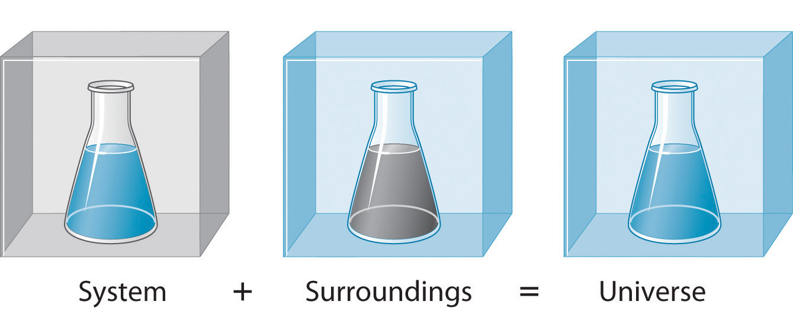
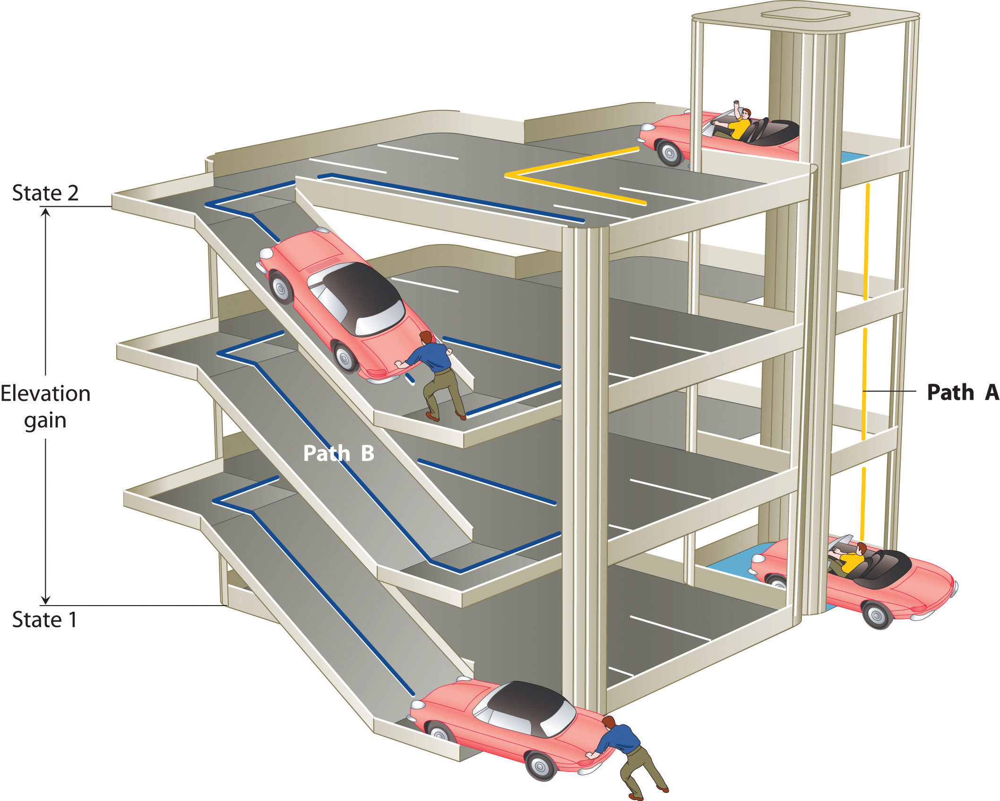
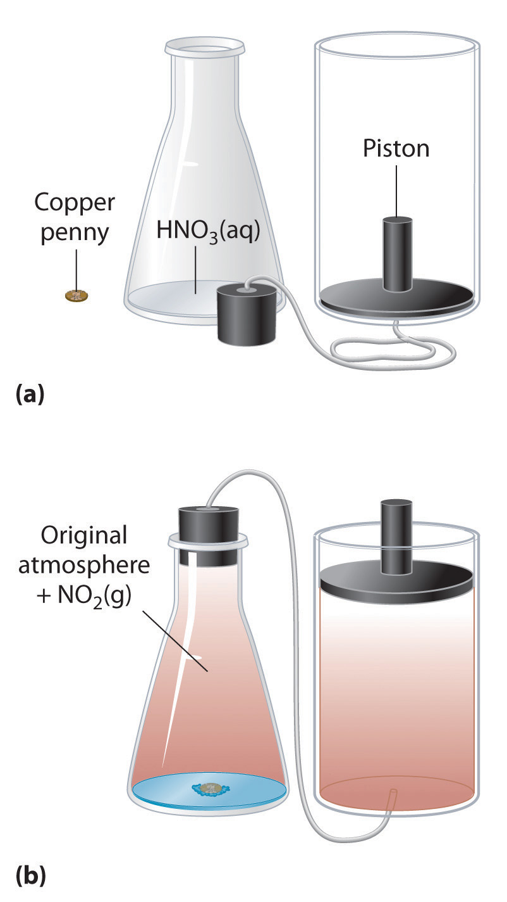
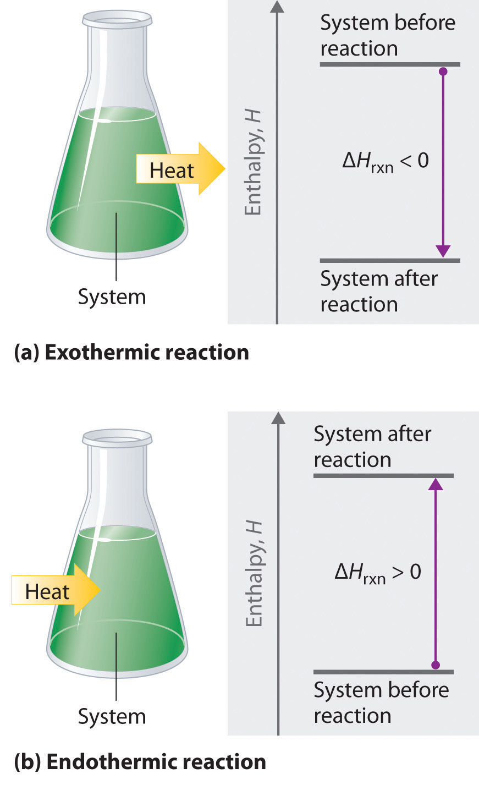
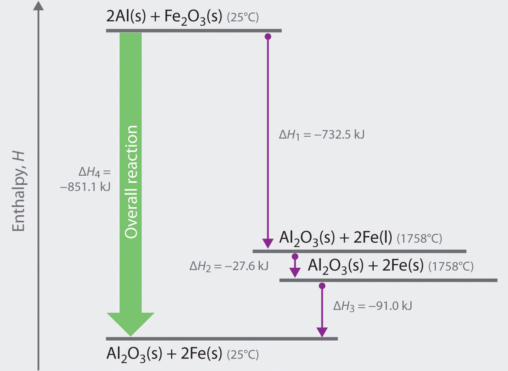
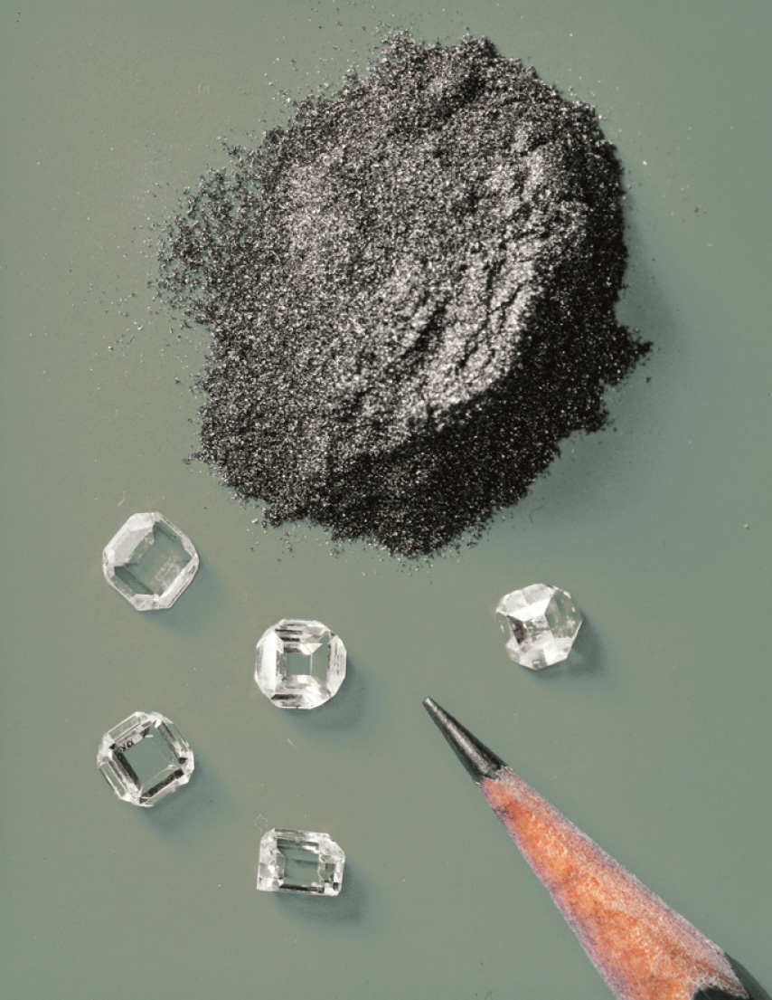
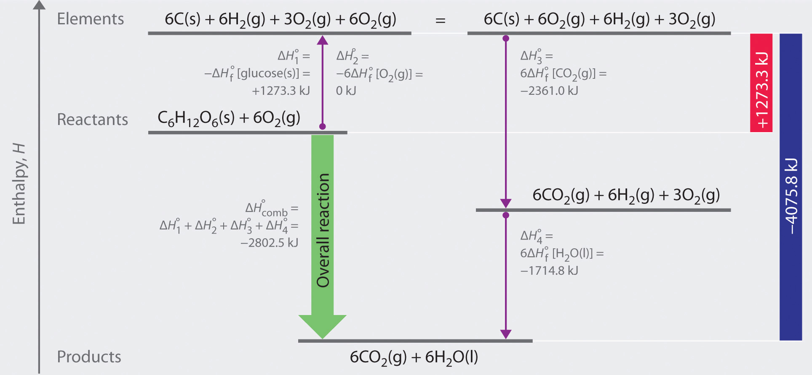
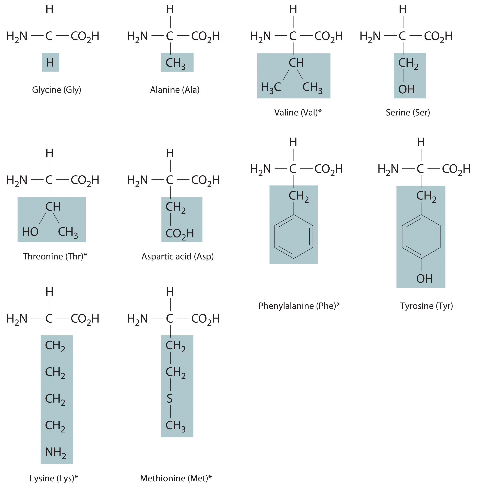

In Chapter 3 "Chemical Reactions", Section 3.3 "Chemical Equations", you learned that applying a small amount of heat to solid ammonium dichromate initiates a vigorous reaction that produces chromium(III) oxide, nitrogen gas, and water vapor. These are not the only products of this reaction that interest chemists, however; the reaction also releases energy in the form of heat and light. So our description of this reaction was incomplete. A complete description of a chemical reaction includes not only the identity, amount, and chemical form of the reactants and products but also the quantity of energy produced or consumed. In combustion reactions, heat is always a product; in other reactions, heat may be produced or consumed.
This chapter introduces you to thermochemistryA branch of chemistry that describes the energy changes that occur during chemical reactions., a branch of chemistry that describes the energy changes that occur during chemical reactions. In some situations, the energy produced by chemical reactions is actually of greater interest to chemists than the material products of the reaction. For example, the controlled combustion of organic molecules, primarily sugars and fats, within our cells provides the energy for physical activity, thought, and other complex chemical transformations that occur in our bodies. Similarly, our energy-intensive society extracts energy from the combustion of fossil fuels, such as coal, petroleum, and natural gas, to manufacture clothing and furniture, heat your home in winter and cool it in summer, and power the car or bus that gets you to class and to the movies. By the end of this chapter, you will know enough about thermochemistry to explain why ice cubes cool a glass of soda, how instant cold packs and hot packs work, and why swimming pools and waterbeds are heated. You will also understand what factors determine the caloric content of your diet and why even “nonpolluting” uses of fossil fuels may be affecting the environment.

Thermodynamic spontaneity. The highly exothermic and dramatic thermite reaction is thermodynamically spontaneous. Reactants of aluminum and a metal oxide, usually iron, which are stable at room temperature, are ignited either in the presence of heat or by the reaction of potassium permanganate and glycerin. The resulting products are aluminum oxide, free and molten elemental metal, and a great deal of heat, which makes this an excellent method for on-site welding. Because this reaction has its own oxygen supply, it can be used for underwater welding as well.
Because energy takes many forms, only some of which can be seen or felt, it is defined by its effect on matter. For example, microwave ovens produce energy to cook food, but we cannot see that energy. In contrast, we can see the energy produced by a light bulb when we switch on a lamp. In this section, we describe the forms of energy and discuss the relationship between energy, heat, and work.
The forms of energy include thermal energy, radiant energy, electrical energy, nuclear energy, and chemical energy (Figure 5.1 "Forms of Energy"). Thermal energyEnergy that results from atomic and molecular motion; the faster the motion, the higher the thermal energy. results from atomic and molecular motion; the faster the motion, the greater the thermal energy. The temperatureA measure of an object’s thermal energy content. of an object is a measure of its thermal energy content. Radiant energyOne of the five forms of energy, radiant energy is carried by light, microwaves, and radio waves (the other forms of energy are thermal, chemical, nuclear, and electrical). Objects left in bright sunshine or exposed to microwaves become warm because much of the radiant energy they absorb is converted to thermal energy. is the energy carried by light, microwaves, and radio waves. Objects left in bright sunshine or exposed to microwaves become warm because much of the radiant energy they absorb is converted to thermal energy. Electrical energyOne of the five forms of energy, electrical energy results from the flow of electrically charged particles. The other four forms of energy are radiant, thermal, chemical, and nuclear. results from the flow of electrically charged particles. When the ground and a cloud develop a separation of charge, for example, the resulting flow of electrons from one to the other produces lightning, a natural form of electrical energy. Nuclear energyOne of the five forms of energy, nuclear energy is stored in the nucleus of an atom. The other four forms of energy are radiant, thermal, chemical, and electrical. is stored in the nucleus of an atom, and chemical energyOne of the five forms of energy, chemical energy is stored within a chemical compound because of a particular arrangement of atoms. The other four forms of energy are radiant, thermal, nuclear, and electrical. is stored within a chemical compound because of a particular arrangement of atoms.
Figure 5.1 Forms of Energy

(a) Thermal energy results from atomic and molecular motion; molten steel at 2000°C has a very high thermal energy content. (b) Radiant energy (e.g., from the sun) is the energy in light, microwaves, and radio waves. (c) Lightning is an example of electrical energy, which is due to the flow of electrically charged particles. (d) Nuclear energy is released when particles in the nucleus of the atom are rearranged. (e) Chemical energy results from the particular arrangement of atoms in a chemical compound; the heat and light produced in this reaction are due to energy released during the breaking and reforming of chemical bonds.
Electrical energy, nuclear energy, and chemical energy are different forms of potential energy (PE)Energy stored in an object because of its relative position or orientation., which is energy stored in an object because of the relative positions or orientations of its components. A brick lying on the windowsill of a 10th-floor office has a great deal of potential energy, but until its position changes by falling, the energy is contained. In contrast, kinetic energy (KE)Energy due to the motion of an object: where is the mass of the object and is its velocity. is energy due to the motion of an object. When the brick falls, its potential energy is transformed to kinetic energy, which is then transferred to the object on the ground that it strikes. The electrostatic attraction between oppositely charged particles is a form of potential energy, which is converted to kinetic energy when the charged particles move toward each other.
Energy can be converted from one form to another (Figure 5.2 "Interconversion of Forms of Energy") or, as we saw with the brick, transferred from one object to another. For example, when you climb a ladder to a high diving board, your body uses chemical energy produced by the combustion of organic molecules. As you climb, the chemical energy is converted to mechanical work to overcome the force of gravity. When you stand on the end of the diving board, your potential energy is greater than it was before you climbed the ladder: the greater the distance from the water, the greater the potential energy. When you then dive into the water, your potential energy is converted to kinetic energy as you fall, and when you hit the surface, some of that energy is transferred to the water, causing it to splash into the air. Chemical energy can also be converted to radiant energy; one common example is the light emitted by fireflies, which is produced from a chemical reaction.
Figure 5.2 Interconversion of Forms of Energy

When a swimmer steps off the platform to dive into the water, potential energy is converted to kinetic energy. As the swimmer climbs back up to the top of the diving platform, chemical energy is converted to mechanical work.
Although energy can be converted from one form to another, the total amount of energy in the universe remains constant. This is known as the law of conservation of energyThe total amount of energy in the universe remains constant. Energy can be neither created nor destroyed, but it can be converted from one form to another..As you will learn in Chapter 18 "Chemical Thermodynamics", the law of conservation of energy is also known as the first law of thermodynamics. Energy cannot be created or destroyed.
One definition of energyThe capacity to do work. is the capacity to do work. The easiest form of work to visualize is mechanical workThe energy required to move an object a distance when opposed by a force : (Figure 5.3 "An Example of Mechanical Work"), which is the energy required to move an object a distance d when opposed by a force F, such as gravity:
Equation 5.1
Because the force (F) that opposes the action is equal to the mass (m) of the object times its acceleration (a), we can also write Equation 5.1 as follows:Recall from Chapter 1 "Introduction to Chemistry" that weight is a force caused by the gravitational attraction between two masses, such as you and Earth.
Equation 5.2
Figure 5.3 An Example of Mechanical Work

One form of energy is mechanical work, the energy required to move an object of mass m a distance d when opposed by a force F, such as gravity.
Consider the mechanical work required for you to travel from the first floor of a building to the second. Whether you take an elevator or an escalator, trudge upstairs, or leap up the stairs two at a time, energy is expended to overcome the force of gravity. The amount of work done (w) and thus the energy required depends on three things: (1) the height of the second floor (the distance d); (2) your mass, which must be raised that distance against the downward acceleration due to gravity; and (3) your path, as you will learn in Section 5.2 "Enthalpy".
In contrast, heat (q)Thermal energy that can be transformed from an object at one temperature to an object at another temperature. is thermal energy that can be transferred from an object at one temperature to an object at another temperature. The net transfer of thermal energy stops when the two objects reach the same temperature.
The energy of an object can be changed only by the transfer of energy to or from another object in the form of heat,As you will learn in Chapter 6 "The Structure of Atoms", hot objects can also lose energy as radiant energy, such as heat or light. This energy is converted to heat when it is absorbed by another object. Hence radiant energy is equivalent to heat. work performed on or by the object, or some combination of heat and work. Consider, for example, the energy stored in a fully charged battery. As shown in Figure 5.4 "Energy Transfer", this energy can be used primarily to perform work (e.g., running an electric fan) or to generate light and heat (e.g., illuminating a light bulb). When the battery is fully discharged in either case, the total change in energy is the same, even though the fraction released as work or heat varies greatly. The sum of the heat produced and the work performed equals the change in energy (ΔE):
Equation 5.3
Energy can be transferred only in the form of heat, work performed on or by an object, or some combination of heat and work.
Figure 5.4 Energy Transfer

Discharging a fully charged battery releases the same amount of energy whether the battery is used to run a fan (a) or illuminate a light bulb (b). In (a), most of the energy is used to perform work, which turns the blades of the fan and thus moves the air; only a small portion of the energy is released as heat by the electric motor. In (b), all the energy is released as heat and light; no work is done.
Energy is an extensive property of matter—for example, the amount of thermal energy in an object is proportional to both its mass and its temperature. (For more information on the properties of matter, see Chapter 1 "Introduction to Chemistry".) A water heater that holds 150 L of water at 50°C contains much more thermal energy than does a 1 L pan of water at 50°C. Similarly, a bomb contains much more chemical energy than does a firecracker. We now present a more detailed description of kinetic and potential energy.
The kinetic energy of an object is related to its mass m and velocity v:
Equation 5.4
For example, the kinetic energy of a 1360 kg (approximately 3000 lb) automobile traveling at a velocity of 26.8 m/s (approximately 60 mi/h) is
Equation 5.5
Because all forms of energy can be interconverted, energy in any form can be expressed using the same units as kinetic energy. The SI unit of energy, the joule (J)The SI unit of energy: ,The joule is named after the British physicist James Joule (1818–1889), an early worker in the field of energy. is defined as 1 kilogram·meter2/second2 (kg·m2/s2). Because a joule is such a small quantity of energy, chemists usually express energy in kilojoules (1 kJ = 103 J). For example, the kinetic energy of the 1360 kg car traveling at 26.8 m/s is 4.88 × 105 J or 4.88 × 102 kJ. It is important to remember that the units of energy are the same regardless of the form of energy, whether thermal, radiant, chemical, or any other form. Because heat and work result in changes in energy, their units must also be the same.

To demonstrate, let’s calculate the potential energy of the same 1360 kg automobile if it were parked on the top level of a parking garage 36.6 m (120 ft) high. Its potential energy is equivalent to the amount of work required to raise the vehicle from street level to the top level of the parking garage, which is given by Equation 5.1 (w = Fd). According to Equation 5.2, the force (F) exerted by gravity on any object is equal to its mass (m, in this case, 1360 kg) times the acceleration (a) due to gravity (g, 9.81 m/s2 at Earth’s surface). The distance (d) is the height (h) above street level (in this case, 36.6 m). Thus the potential energy of the car is as follows:
Equation 5.6

The units of potential energy are the same as the units of kinetic energy. Notice that in this case the potential energy of the stationary automobile at the top of a 36.6 m high parking garage is the same as its kinetic energy at 60 mi/h. If the vehicle fell from the roof of the parking garage, its potential energy would be converted to kinetic energy, and it is reasonable to infer that the vehicle would be traveling at 60 mi/h just before it hit the ground, neglecting air resistance. After the car hit the ground, its potential and kinetic energy would both be zero.
Potential energy is usually defined relative to an arbitrary standard position (in this case, the street was assigned an elevation of zero). As a result, we usually calculate only differences in potential energy: in this case, the difference between the potential energy of the car on the top level of the parking garage and the potential energy of the same car on the street at the base of the garage.


A recent and spectacular example of the conversion of potential energy to kinetic energy was seen by the earthquake near the east coast of Honshu, Japan, on March 11, 2011. The magnitude 9.0 earthquake occurred along the Japan Trench subduction zone, the interface boundary between the Pacific and North American geological plates. During its westward movement, the Pacific plate became trapped under the North American plate, and its further movement was prevented. When there was sufficient potential energy to allow the Pacific plate to break free, approximately 7.1 × 1015 kJ of potential energy was released as kinetic energy, the equivalent of 4.75 × 108 tn of TNT (trinitrotoluene) or 25,003 nuclear bombs. The island of Japan experienced the worst devastation in its history from the earthquake, resulting tsunami, and aftershocks. Historical records indicate that an earthquake of such force occurs in some region of the globe approximately every 1000 years. One such earthquake and resulting tsunami is speculated to have caused the destruction of the lost city of Atlantis, referred to by the ancient Greek philosopher Plato.
The units of energy are the same for all forms of energy.
Energy can also be expressed in the non-SI units of calories (cal)A non-SI unit of energy: 1 cal = 4.184 J exactly., where 1 cal was originally defined as the amount of energy needed to raise the temperature of exactly 1 g of water from 14.5°C to 15.5°C.We specify the exact temperatures because the amount of energy needed to raise the temperature of 1 g of water 1°C varies slightly with elevation. To three significant figures, however, this amount is 1.00 cal over the temperature range 0°C–100°C. The name is derived from the Latin calor, meaning “heat.” Although energy may be expressed as either calories or joules, calories were defined in terms of heat, whereas joules were defined in terms of motion. Because calories and joules are both units of energy, however, the calorie is now defined in terms of the joule:
Equation 5.7
In this text, we will use the SI units—joules (J) and kilojoules (kJ)—exclusively, except when we deal with nutritional information, addressed in Section 5.4 "Thermochemistry and Nutrition".
Given: mass and velocity or height
Asked for: kinetic and potential energy
Strategy:
Use Equation 5.4 to calculate the kinetic energy and Equation 5.6 to calculate the potential energy, as appropriate.
Solution:
The kinetic energy of an object is given by In this case, we know both the mass and the velocity, but we must convert the velocity to SI units:
The kinetic energy of the baseball is therefore
The increase in potential energy is the same as the amount of work required to raise the ball to its new altitude, which is (250 − 3) = 247 feet above its initial position. Thus
Exercise
Answer:
general definition of work
Equation 5.1: w = Fd
Equation 5.2: w = mad
relationship between energy, heat, and work
Equation 5.3: ΔE = q + w
kinetic energy
potential energy in a gravitational field
Equation 5.6: PE = mgh
Thermochemistry is a branch of chemistry that qualitatively and quantitatively describes the energy changes that occur during chemical reactions. Energy is the capacity to do work. Mechanical work is the amount of energy required to move an object a given distance when opposed by a force. Thermal energy is due to the random motions of atoms, molecules, or ions in a substance. The temperature of an object is a measure of the amount of thermal energy it contains. Heat (q) is the transfer of thermal energy from a hotter object to a cooler one. Energy can take many forms; most are different varieties of potential energy (PE), energy caused by the relative position or orientation of an object. Kinetic energy (KE) is the energy an object possesses due to its motion. Energy can be converted from one form to another, but the law of conservation of energy states that energy can be neither created nor destroyed. The most common units of energy are the joule (J), defined as 1 (kg·m2)/s2, and the calorie, defined as the amount of energy needed to raise the temperature of 1 g of water by 1°C (1 cal = 4.184 J).
What is the relationship between mechanical work and energy?
Does a person with a mass of 50 kg climbing a height of 15 m do work? Explain your answer. Does that same person do work while descending a mountain?
If a person exerts a force on an immovable object, does that person do work? Explain your answer.
Explain the differences between electrical energy, nuclear energy, and chemical energy.
The chapter describes thermal energy, radiant energy, electrical energy, nuclear energy, and chemical energy. Which form(s) of energy are represented by each of the following?
Describe the various forms of energy that are interconverted when a flashlight is switched on.
Describe the forms of energy that are interconverted when the space shuttle lifts off.
Categorize each of the following as representing kinetic energy or potential energy.
Are the units for potential energy the same as the units for kinetic energy? Can an absolute value for potential energy be obtained? Explain your answer.
Categorize each of the following as representing kinetic energy or potential energy.
Why does hammering a piece of sheet metal cause the metal to heat up?
Technically, the person is not doing any work, since the object does not move.
The kinetic energy of the hammer is transferred to the metal.
Please be sure you are familiar with the topics discussed in Essential Skills 4 (Section 5.6 "Essential Skills 4") before proceeding to the Numerical Problems.
Describe the mathematical relationship between (a) the thermal energy stored in an object and that object’s mass and (b) the thermal energy stored in an object and that object’s temperature.
How much energy (in kilojoules) is released or stored when each of the following occurs?
Calculate how much energy (in kilojoules) is released or stored when each of the following occurs:
A car weighing 1438 kg falls off a bridge that is 211 ft high. Ignoring air resistance, how much energy is released when the car hits the water?
A 1 tn roller coaster filled with passengers reaches a height of 28 m before accelerating downhill. How much energy is released when the roller coaster reaches the bottom of the hill? Assume no energy is lost due to friction.
250 kJ released
To study the flow of energy during a chemical reaction, we need to distinguish between a systemThe small, well-defined part of the universe in which we are interested., the small, well-defined part of the universe in which we are interested (such as a chemical reaction), and its surroundingsAll the universe that is not the system; that is, system + surroundings = universe., the rest of the universe, including the container in which the reaction is carried out (Figure 5.5 "A System and Its Surroundings"). In the discussion that follows, the mixture of chemical substances that undergoes a reaction is always the system, and the flow of heat can be from the system to the surroundings or vice versa.
Figure 5.5 A System and Its Surroundings
The system is that part of the universe we are interested in studying, such as a chemical reaction inside a flask. The surroundings are the rest of the universe, including the container in which the reaction is carried out.
Three kinds of systems are important in chemistry. An open systemA system that can exchange both matter and energy with its surroundings. can exchange both matter and energy with its surroundings. A pot of boiling water is an open system because a burner supplies energy in the form of heat, and matter in the form of water vapor is lost as the water boils. A closed systemA system that can exchange energy but not matter with its surroundings. can exchange energy but not matter with its surroundings. The sealed pouch of a ready-made dinner that is dropped into a pot of boiling water is a closed system because thermal energy is transferred to the system from the boiling water but no matter is exchanged (unless the pouch leaks, in which case it is no longer a closed system). An isolated systemA system that can exchange neither energy nor matter with its suroundings. exchanges neither energy nor matter with the surroundings. Energy is always exchanged between a system and its surroundings, although this process may take place very slowly. A truly isolated system does not actually exist. An insulated thermos containing hot coffee approximates an isolated system, but eventually the coffee cools as heat is transferred to the surroundings. In all cases, the amount of heat lost by a system is equal to the amount of heat gained by its surroundings and vice versa. That is, the total energy of a system plus its surroundings is constant, which must be true if energy is conserved.
The state of a systemA complete description of the system at a given time, including its temperature and pressure, the amount of matter it contains, its chemical composition, and the physical state of the matter. is a complete description of a system at a given time, including its temperature and pressure, the amount of matter it contains, its chemical composition, and the physical state of the matter. A state functionA property of a system whose magnitude depends on only the present state of the system, not its previous history. is a property of a system whose magnitude depends on only the present state of the system, not its previous history. Temperature, pressure, volume, and potential energy are all state functions. The temperature of an oven, for example, is independent of however many steps it may have taken for it to reach that temperature. Similarly, the pressure in a tire is independent of how often air is pumped into the tire for it to reach that pressure, as is the final volume of air in the tire. Heat and work, on the other hand, are not state functions because they are path dependent. For example, a car sitting on the top level of a parking garage has the same potential energy whether it was lifted by a crane, set there by a helicopter, driven up, or pushed up by a group of students (Figure 5.6 "Elevation as an Example of a State Function"). The amount of work expended to get it there, however, can differ greatly depending on the path chosen. If the students decided to carry the car to the top of the ramp, they would perform a great deal more work than if they simply pushed the car up the ramp (unless, of course, they neglected to release the parking brake, in which case the work expended would increase substantially!). The potential energy of the car is the same, however, no matter which path they choose.
Figure 5.6 Elevation as an Example of a State Function
The change in elevation between state 1 (at the bottom of the parking garage) and state 2 (at the top level of the parking garage) is the same for both paths A and B; it does not depend on which path is taken from the bottom to the top. In contrast, the distance traveled and the work needed to reach the top do depend on which path is taken. Elevation is a state function, but distance and work are not state functions.
The reaction of powdered aluminum with iron(III) oxide, known as the thermite reaction, generates an enormous amount of heat—enough, in fact, to melt steel (see chapter opening image). The balanced chemical equation for the reaction is as follows:
Equation 5.8
2Al(s) + Fe2O3(s) → 2Fe(s) + Al2O3(s)We can also write this chemical equation as
Equation 5.9
2Al(s) + Fe2O3(s) → 2Fe(s) + Al2O3(s) + heatto indicate that heat is one of the products. Chemical equations in which heat is shown as either a reactant or a product are called thermochemical equations. In this reaction, the system consists of aluminum, iron, and oxygen atoms; everything else, including the container, makes up the surroundings. During the reaction, so much heat is produced that the iron liquefies. Eventually, the system cools; the iron solidifies as heat is transferred to the surroundings. A process in which heat (q) is transferred from a system to its surroundings is described as exothermicA process in which heat is transferred from a system to its surroundings.. By convention, q < 0 for an exothermic reaction.
When you hold an ice cube in your hand, heat from the surroundings (including your hand) is transferred to the system (the ice), causing the ice to melt and your hand to become cold. We can describe this process by the following thermochemical equation:
Equation 5.10
heat + H2O(s) → H2O(l)When heat is transferred to a system from its surroundings, the process is endothermicA process in which heat is transferred to a system from its surroundings.. By convention, q > 0 for an endothermic reaction.
We have stated that the change in energy (ΔE) is equal to the sum of the heat produced and the work performed (Equation 5.3). Work done by an expanding gas is called pressure-volume work, also called PV work. Consider, for example, a reaction that produces a gas, such as dissolving a piece of copper in concentrated nitric acid. The chemical equation for this reaction is as follows:
Equation 5.11
Cu(s) + 4HNO3(aq) → Cu(NO3)2(aq) + 2H2O(l) + 2NO2(g)If the reaction is carried out in a closed system that is maintained at constant pressure by a movable piston, the piston will rise as nitrogen dioxide gas is formed (Figure 5.7 "An Example of Work Performed by a Reaction Carried Out at Constant Pressure"). The system is performing work by lifting the piston against the downward force exerted by the atmosphere (i.e., atmospheric pressure). We find the amount of PV work done by multiplying the external pressure P by the change in volume caused by movement of the piston (ΔV). At a constant external pressure (here, atmospheric pressure)
Equation 5.12
w = −PΔVThe negative sign associated with PV work done indicates that the system loses energy. If the volume increases at constant pressure (ΔV > 0), the work done by the system is negative, indicating that a system has lost energy by performing work on its surroundings. Conversely, if the volume decreases (ΔV < 0), the work done by the system is positive, which means that the surroundings have performed work on the system, thereby increasing its energy.
Figure 5.7 An Example of Work Performed by a Reaction Carried Out at Constant Pressure
(a) Initially, the system (a copper penny and concentrated nitric acid) is at atmospheric pressure. (b) When the penny is added to the nitric acid, the volume of NO2 gas that is formed causes the piston to move upward to maintain the system at atmospheric pressure. In doing so, the system is performing work on its surroundings.
The symbol E in Equation 5.3 represents the internal energyThe sum of the kinetic and potential energies of all of a system’s components. Additionally, ΔE = q + w, where q is the heat produced by the system and w is the work performed by the system. Internal energy is a state function. of a system, which is the sum of the kinetic energy and potential energy of all its components. It is the change in internal energy that produces heat plus work. To measure the energy changes that occur in chemical reactions, chemists usually use a related thermodynamic quantity called enthalpy (H)The sum of a system’s internal energy and the product of its pressure and volume : (from the Greek enthalpein, meaning “to warm”). The enthalpy of a system is defined as the sum of its internal energy E plus the product of its pressure P and volume V:
Equation 5.13
H = E + PVBecause internal energy, pressure, and volume are all state functions, enthalpy is also a state function.
If a chemical change occurs at constant pressure (for a given P, ΔP = 0), the change in enthalpy (ΔH)At constant pressure, the amount of heat transferred from the surroundings to the system or vice versa: . is
Equation 5.14
ΔH = Δ(E + PV) = ΔE + ΔPV = ΔE + PΔVSubstituting q + w for ΔE (Equation 5.3) and −w for PΔV (Equation 5.12), we obtain
Equation 5.15
ΔH = ΔE + PΔV = qp + w − w = qpThe subscript p is used here to emphasize that this equation is true only for a process that occurs at constant pressure. From Equation 5.15 we see that at constant pressure the change in enthalpy, ΔH of the system, defined as Hfinal − Hinitial, is equal to the heat gained or lost.
Equation 5.16
ΔH = Hfinal − Hinitial = qpJust as with ΔE, because enthalpy is a state function, the magnitude of ΔH depends on only the initial and final states of the system, not on the path taken. Most important, the enthalpy change is the same even if the process does not occur at constant pressure.
To find ΔH, measure qp.
When we study energy changes in chemical reactions, the most important quantity is usually the enthalpy of reaction (ΔHrxn)The change in enthalpy that occurs during a chemical reaction., the change in enthalpy that occurs during a reaction (such as the dissolution of a piece of copper in nitric acid). If heat flows from a system to its surroundings, the enthalpy of the system decreases, so ΔHrxn is negative. Conversely, if heat flows from the surroundings to a system, the enthalpy of the system increases, so ΔHrxn is positive. Thus ΔHrxn < 0 for an exothermic reaction, and ΔHrxn > 0 for an endothermic reaction. In chemical reactions, bond breaking requires an input of energy and is therefore an endothermic process, whereas bond making releases energy, which is an exothermic process. The sign conventions for heat flow and enthalpy changes are summarized in the following table:
| Reaction Type | q | ΔHrxn |
|---|---|---|
| exothermic | < 0 | < 0 (heat flows from a system to its surroundings) |
| endothermic | > 0 | > 0 (heat flows from the surroundings to a system) |
If ΔHrxn is negative, then the enthalpy of the products is less than the enthalpy of the reactants; that is, an exothermic reaction is energetically downhill (part (a) in Figure 5.8 "The Enthalpy of Reaction"). Conversely, if ΔHrxn is positive, then the enthalpy of the products is greater than the enthalpy of the reactants; thus, an endothermic reaction is energetically uphill (part (b) in Figure 5.8 "The Enthalpy of Reaction"). Two important characteristics of enthalpy and changes in enthalpy are summarized in the following discussion.
Bond breaking requires an input of energy; bond making releases energy.
Figure 5.8 The Enthalpy of Reaction
Energy changes in chemical reactions are usually measured as changes in enthalpy. (a) If heat flows from a system to its surroundings, the enthalpy of the system decreases, ΔHrxn is negative, and the reaction is exothermic; it is energetically downhill. (b) Conversely, if heat flows from the surroundings to a system, the enthalpy of the system increases, ΔHrxn is positive, and the reaction is endothermic; it is energetically uphill.
Reversing a reaction or a process changes the sign of ΔH. Ice absorbs heat when it melts (electrostatic interactions are broken), so liquid water must release heat when it freezes (electrostatic interactions are formed):
Equation 5.17
Equation 5.18
In both cases, the magnitude of the enthalpy change is the same; only the sign is different.
Enthalpy is an extensive property (like mass). The magnitude of ΔH for a reaction is proportional to the amounts of the substances that react. For example, a large fire produces more heat than a single match, even though the chemical reaction—the combustion of wood—is the same in both cases. For this reason, the enthalpy change for a reaction is usually given in kilojoules per mole of a particular reactant or product. Consider Equation 5.19, which describes the reaction of aluminum with iron(III) oxide (Fe2O3) at constant pressure. According to the reaction stoichiometry, 2 mol of Fe, 1 mol of Al2O3, and 851.5 kJ of heat are produced for every 2 mol of Al and 1 mol of Fe2O3 consumed:
Equation 5.19
2Al(s) + Fe2O3(s) → 2Fe(s) + Al2O3(s) + 851.5 kJThus ΔH = −851.5 kJ/mol of Fe2O3. We can also describe ΔH for the reaction as −425.8 kJ/mol of Al: because 2 mol of Al are consumed in the balanced chemical equation, we divide −851.5 kJ by 2. When a value for ΔH, in kilojoules rather than kilojoules per mole, is written after the reaction, as in Equation 5.20, it is the value of ΔH corresponding to the reaction of the molar quantities of reactants as given in the balanced chemical equation:
Equation 5.20
If 4 mol of Al and 2 mol of Fe2O3 react, the change in enthalpy is 2 × (−851.5 kJ) = −1703 kJ. We can summarize the relationship between the amount of each substance and the enthalpy change for this reaction as follows:
Equation 5.21
The relationship between the magnitude of the enthalpy change and the mass of reactants is illustrated in Example 2.
Certain parts of the world, such as southern California and Saudi Arabia, are short of freshwater for drinking. One possible solution to the problem is to tow icebergs from Antarctica and then melt them as needed. If ΔH is 6.01 kJ/mol for the reaction H2O(s) → H2O(l) at 0°C and constant pressure, how much energy would be required to melt a moderately large iceberg with a mass of 1.00 million metric tons (1.00 × 106 metric tons)? (A metric ton is 1000 kg.)
Given: energy per mole of ice and mass of iceberg
Asked for: energy required to melt iceberg
Strategy:
A Calculate the number of moles of ice contained in 1 million metric tons (1.00 × 106 metric tons) of ice.
B Calculate the energy needed to melt the ice by multiplying the number of moles of ice in the iceberg by the amount of energy required to melt 1 mol of ice.
Solution:
A Because enthalpy is an extensive property, the amount of energy required to melt ice depends on the amount of ice present. We are given ΔH for the process—that is, the amount of energy needed to melt 1 mol (or 18.015 g) of ice—so we need to calculate the number of moles of ice in the iceberg and multiply that number by ΔH (+6.01 kJ/mol):
B The energy needed to melt the iceberg is thus
Because so much energy is needed to melt the iceberg, this plan would require a relatively inexpensive source of energy to be practical. To give you some idea of the scale of such an operation, the amounts of different energy sources equivalent to the amount of energy needed to melt the iceberg are shown in the table below.
| Possible sources of the approximately 3.34 × 1011 kJ needed to melt a 1.00 × 106 metric ton iceberg |
|---|
| Combustion of 3.8 × 103 ft3 of natural gas |
| Combustion of 68,000 barrels of oil |
| Combustion of 15,000 tons of coal |
| 1.1 × 108 kilowatt-hours of electricity |
Exercise
If 17.3 g of powdered aluminum are allowed to react with excess Fe2O3, how much heat is produced?
Answer: 273 kJ
Because enthalpy is a state function, the enthalpy change for a reaction depends on only two things: (1) the masses of the reacting substances and (2) the physical states of the reactants and products. It does not depend on the path by which reactants are converted to products. If you climbed a mountain, for example, the altitude change would not depend on whether you climbed the entire way without stopping or you stopped many times to take a break. If you stopped often, the overall change in altitude would be the sum of the changes in altitude for each short stretch climbed. Similarly, when we add two or more balanced chemical equations to obtain a net chemical equation, ΔH for the net reaction is the sum of the ΔH values for the individual reactions. This principle is called Hess’s lawThe enthalpy change for an overall reaction is the sum of the values for the individual reactions., after the Swiss-born Russian chemist Germain Hess (1802–1850), a pioneer in the study of thermochemistry. Hess’s law allows us to calculate ΔH values for reactions that are difficult to carry out directly by adding together the known ΔH values for individual steps that give the overall reaction, even though the overall reaction may not actually occur via those steps.
We can illustrate Hess’s law using the thermite reaction. The overall reaction shown in Equation 5.20 can be viewed as occurring in three distinct steps with known ΔH values. As shown in Figure 5.9 "Energy Changes Accompanying the Thermite Reaction", the first reaction produces 1 mol of solid aluminum oxide (Al2O3) and 2 mol of liquid iron at its melting point of 1758°C (part (a) in Equation 5.22); the enthalpy change for this reaction is −732.5 kJ/mol of Fe2O3. The second reaction is the conversion of 2 mol of liquid iron at 1758°C to 2 mol of solid iron at 1758°C (part (b) in Equation 5.22); the enthalpy change for this reaction is −13.8 kJ/mol of Fe (−27.6 kJ per 2 mol Fe). In the third reaction, 2 mol of solid iron at 1758°C is converted to 2 mol of solid iron at 25°C (part (c) in Equation 5.22); the enthalpy change for this reaction is −45.5 kJ/mol of Fe (−91.0 kJ per 2 mol Fe). As you can see in Figure 5.9 "Energy Changes Accompanying the Thermite Reaction", the overall reaction is given by the longest arrow (shown on the left), which is the sum of the three shorter arrows (shown on the right). Adding parts (a), (b), and (c) in Equation 5.22 gives the overall reaction, shown in part (d):
Equation 5.22
The net reaction in part (d) in Equation 5.22 is identical to Equation 5.20. By Hess’s law, the enthalpy change for part (d) is the sum of the enthalpy changes for parts (a), (b), and (c). In essence, Hess’s law enables us to calculate the enthalpy change for the sum of a series of reactions without having to draw a diagram like that in Figure 5.9 "Energy Changes Accompanying the Thermite Reaction".
Figure 5.9 Energy Changes Accompanying the Thermite Reaction
Because enthalpy is a state function, the overall enthalpy change for the reaction of 2 mol of Al(s) with 1 mol of Fe2O3(s) is −851.1 kJ, whether the reaction occurs in a single step (ΔH4, shown on the left) or in three hypothetical steps (shown on the right) that involve the successive formation of solid Al2O3 and liquid iron (ΔH1), solid iron at 1758°C (ΔH2), and solid iron at 25°C (ΔH3). Thus ΔH4 = ΔH1 + ΔH2 + ΔH3, as stated by Hess’s law.
Comparing parts (a) and (d) in Equation 5.22 also illustrates an important point: The magnitude of ΔH for a reaction depends on the physical states of the reactants and the products (gas, liquid, solid, or solution). When the product is liquid iron at its melting point (part (a) in Equation 5.22), only 732.5 kJ of heat are released to the surroundings compared with 852 kJ when the product is solid iron at 25°C (part (d) in Equation 5.22). The difference, 120 kJ, is the amount of energy that is released when 2 mol of liquid iron solidifies and cools to 25°C. It is important to specify the physical state of all reactants and products when writing a thermochemical equation.
When using Hess’s law to calculate the value of ΔH for a reaction, follow this procedure:
We illustrate how to use this procedure in Example 3.
When carbon is burned with limited amounts of oxygen gas (O2), carbon monoxide (CO) is the main product:
When carbon is burned in excess O2, carbon dioxide (CO2) is produced:
Use this information to calculate the enthalpy change per mole of CO for the reaction of CO with O2 to give CO2.
Given: two balanced chemical equations and their ΔH values
Asked for: enthalpy change for a third reaction
Strategy:
A After balancing the chemical equation for the overall reaction, write two equations whose ΔH values are known and that, when added together, give the equation for the overall reaction. (Reverse the direction of one or more of the equations as necessary, making sure to also reverse the sign of ΔH.)
B Multiply the equations by appropriate factors to ensure that they give the desired overall chemical equation when added together. To obtain the enthalpy change per mole of CO, write the resulting equations as a sum, along with the enthalpy change for each.
Solution:
A We begin by writing the balanced chemical equation for the reaction of interest:
There are at least two ways to solve this problem using Hess’s law and the data provided. The simplest is to write two equations that can be added together to give the desired equation and for which the enthalpy changes are known. Observing that CO, a reactant in Equation 3, is a product in Equation 1, we can reverse Equation (1) to give
Because we have reversed the direction of the reaction, the sign of ΔH is changed. We can use Equation 2 as written because its product, CO2, is the product we want in Equation 3:
B Adding these two equations together does not give the desired reaction, however, because the numbers of C(s) on the left and right sides do not cancel. According to our strategy, we can multiply the second equation by 2 to obtain 2 mol of C(s) as the reactant:
Writing the resulting equations as a sum, along with the enthalpy change for each, gives
Note that the overall chemical equation and the enthalpy change for the reaction are both for the reaction of 2 mol of CO with O2, and the problem asks for the amount per mole of CO. Consequently, we must divide both sides of the final equation and the magnitude of ΔH by 2:
An alternative and equally valid way to solve this problem is to write the two given equations as occurring in steps. Note that we have multiplied the equations by the appropriate factors to allow us to cancel terms:
The sum of reactions A and B is reaction C, which corresponds to the combustion of 2 mol of carbon to give CO2. From Hess’s law, ΔHA + ΔHB = ΔHC, and we are given ΔH for reactions A and C. Substituting the appropriate values gives
This is again the enthalpy change for the conversion of 2 mol of CO to CO2. The enthalpy change for the conversion of 1 mol of CO to CO2 is therefore −566.0 ÷ 2 = −283.0 kJ/mol of CO, which is the same result we obtained earlier. As you can see, there may be more than one correct way to solve a problem.
Exercise
The reaction of acetylene (C2H2) with hydrogen (H2) can produce either ethylene (C2H4) or ethane (C2H6):
What is ΔH for the reaction of C2H4 with H2 to form C2H6?
Answer: −136.3 kJ/mol of C2H4
Chapter 2 "Molecules, Ions, and Chemical Formulas", Chapter 3 "Chemical Reactions", and Chapter 4 "Reactions in Aqueous Solution" presented a wide variety of chemical reactions, and you learned how to write balanced chemical equations that include all the reactants and the products except heat. One way to report the heat absorbed or released would be to compile a massive set of reference tables that list the enthalpy changes for all possible chemical reactions, which would require an incredible amount of effort. Fortunately, Hess’s law allows us to calculate the enthalpy change for virtually any conceivable chemical reaction using a relatively small set of tabulated data, such as the following:
Enthalpy of formation (ΔHf)The enthalpy change for the formation of 1 mol of a compound from its component elements.: The enthalpy change for the formation of 1 mol of a compound from its component elements, such as the formation of carbon dioxide from carbon and oxygen. The corresponding relationship is
Equation 5.23
For example,
The sign convention for ΔHf is the same as for any enthalpy change: ΔHf < 0 if heat is released when elements combine to form a compound and ΔHf > 0 if heat is absorbed. The values of ΔHvap and ΔHfus for some common substances are listed in Table 5.1 "Enthalpies of Vaporization and Fusion for Selected Substances at Their Boiling Points and Melting Points". These values are used in enthalpy calculations when any of the substances undergoes a change of physical state during a reaction.
Table 5.1 Enthalpies of Vaporization and Fusion for Selected Substances at Their Boiling Points and Melting Points
| Substance | ΔHvap (kJ/mol) | ΔHfus (kJ/mol) |
|---|---|---|
| argon (Ar) | 6.3 | 1.3 |
| methane (CH4) | 9.2 | 0.84 |
| ethanol (CH3CH2OH) | 39.3 | 7.6 |
| benzene (C6H6) | 31.0 | 10.9 |
| water (H2O) | 40.7 | 6.0 |
| mercury (Hg) | 59.0 | 2.29 |
| iron (Fe) | 340 | 14 |
The sign convention is the same for all enthalpy changes: negative if heat is released by the system and positive if heat is absorbed by the system.
The magnitude of ΔH for a reaction depends on the physical states of the reactants and the products (gas, liquid, solid, or solution), the pressure of any gases present, and the temperature at which the reaction is carried out. To avoid confusion caused by differences in reaction conditions and ensure uniformity of data, the scientific community has selected a specific set of conditions under which enthalpy changes are measured. These standard conditions serve as a reference point for measuring differences in enthalpy, much as sea level is the reference point for measuring the height of a mountain or for reporting the altitude of an airplane.
The standard conditionsThe conditions under which most thermochemical data are tabulated: 1 atm for all gases and a concentration of 1.0 M for all species in solution. for which most thermochemical data are tabulated are a pressure of 1 atmosphere (atm) for all gases and a concentration of 1 M for all species in solution (1 mol/L). In addition, each pure substance must be in its standard stateThe most stable form of a pure substance at a pressure of 1 atm at a specified temperature.. This is usually its most stable form at a pressure of 1 atm at a specified temperature. We assume a temperature of 25°C (298 K) for all enthalpy changes given in this text, unless otherwise indicated. Enthalpies of formation measured under these conditions are called standard enthalpies of formation ()The enthalpy change for the formation of 1 mol of a compound from its component elements when the component elements are each in their standard states. The standard enthalpy of formation of any element in its most stable form is zero by definition. (which is pronounced “delta H eff naught”). The standard enthalpy of formation of any element in its standard state is zero by definition. For example, although oxygen can exist as ozone (O3), atomic oxygen (O), and molecular oxygen (O2), O2 is the most stable form at 1 atm pressure and 25°C. Similarly, hydrogen is H2(g), not atomic hydrogen (H). Graphite and diamond are both forms of elemental carbon, but because graphite is more stable at 1 atm pressure and 25°C, the standard state of carbon is graphite (Figure 5.10 "Elemental Carbon"). Therefore, O2(g), H2(g), and graphite have values of zero.
Figure 5.10 Elemental Carbon
Although graphite and diamond are both forms of elemental carbon, graphite is more stable at 1 atm pressure and 25°C than diamond is. Given enough time, diamond will revert to graphite under these conditions. Hence graphite is the standard state of carbon.
The standard enthalpy of formation of glucose from the elements at 25°C is the enthalpy change for the following reaction:
Equation 5.24
It is not possible to measure the value of for glucose, −1273.3 kJ/mol, by simply mixing appropriate amounts of graphite, O2, and H2 and measuring the heat evolved as glucose is formed; the reaction shown in Equation 5.24 does not occur at a measurable rate under any known conditions. Glucose is not unique; most compounds cannot be prepared by the chemical equations that define their standard enthalpies of formation. Instead, values of are obtained using Hess’s law and standard enthalpy changes that have been measured for other reactions, such as combustion reactions. Values of for an extensive list of compounds are given in Chapter 25 "Appendix A: Standard Thermodynamic Quantities for Chemical Substances at 25°C". Note that values are always reported in kilojoules per mole of the substance of interest. Also notice in Chapter 25 "Appendix A: Standard Thermodynamic Quantities for Chemical Substances at 25°C" that the standard enthalpy of formation of O2(g) is zero because it is the most stable form of oxygen in its standard state.
For the formation of each compound, write a balanced chemical equation corresponding to the standard enthalpy of formation of each compound.
Given: compound
Asked for: balanced chemical equation for its formation from elements in standard states
Strategy:
Use Chapter 25 "Appendix A: Standard Thermodynamic Quantities for Chemical Substances at 25°C" to identify the standard state for each element. Write a chemical equation that describes the formation of the compound from the elements in their standard states and then balance it so that 1 mol of product is made.
Solution:
To calculate the standard enthalpy of formation of a compound, we must start with the elements in their standard states. The standard state of an element can be identified in Chapter 25 "Appendix A: Standard Thermodynamic Quantities for Chemical Substances at 25°C" by a value of 0 kJ/mol.
Hydrogen chloride contains one atom of hydrogen and one atom of chlorine. Because the standard states of elemental hydrogen and elemental chlorine are H2(g) and Cl2(g), respectively, the unbalanced chemical equation is
H2(g) + Cl2(g) → HCl(g)Fractional coefficients are required in this case because values are reported for 1 mol of the product, HCl. Multiplying both H2(g) and Cl2(g) by 1/2 balances the equation:
The standard states of the elements in this compound are Mg(s), C(s, graphite), and O2(g). The unbalanced chemical equation is thus
Mg(s) + C(s, graphite) + O2(g) → MgCO3(s)This equation can be balanced by inspection to give
Palmitic acid, the major fat in meat and dairy products, contains hydrogen, carbon, and oxygen, so the unbalanced chemical equation for its formation from the elements in their standard states is as follows:
C(s, graphite) + H2(g) + O2(g) → CH3(CH2)14CO2H(s)There are 16 carbon atoms and 32 hydrogen atoms in 1 mol of palmitic acid, so the balanced chemical equation is
16C(s, graphite) + 16H2(g) + O2(g) → CH3(CH2)14CO2H(s)Exercise
For the formation of each compound, write a balanced chemical equation corresponding to the standard enthalpy of formation of each compound.
Answer:
Tabulated values of standard enthalpies of formation can be used to calculate enthalpy changes for any reaction involving substances whose values are known. The standard enthalpy of reaction ()The enthalpy change that occurs when a reaction is carried out with all reactants and products in their standard state. is the enthalpy change that occurs when a reaction is carried out with all reactants and products in their standard states. Consider the general reaction
Equation 5.25
aA + bB → cC + dDwhere A, B, C, and D are chemical substances and a, b, c, and d are their stoichiometric coefficients. The magnitude of is the sum of the standard enthalpies of formation of the products, each multiplied by its appropriate coefficient, minus the sum of the standard enthalpies of formation of the reactants, also multiplied by their coefficients:
Equation 5.26
More generally, we can write
Equation 5.27
where the symbol Σ means “sum of” and m and n are the stoichiometric coefficients of each of the products and the reactants, respectively. “Products minus reactants” summations such as Equation 5.27 arise from the fact that enthalpy is a state function. Because many other thermochemical quantities are also state functions, “products minus reactants” summations are very common in chemistry; we will encounter many others in subsequent chapters.
“Products minus reactants” summations are typical of state functions.
To demonstrate the use of tabulated values, we will use them to calculate for the combustion of glucose, the reaction that provides energy for your brain:
Equation 5.28
C6H12O6(s) + 6O2(g) → 6CO2(g) + 6H2O(l)Using Equation 5.27, we write
Equation 5.29
From Chapter 25 "Appendix A: Standard Thermodynamic Quantities for Chemical Substances at 25°C", the relevant values are , , and . Because O2(g) is a pure element in its standard state, Inserting these values into Equation 5.29 and changing the subscript to indicate that this is a combustion reaction, we obtain
Equation 5.30
As illustrated in Figure 5.11 "A Thermochemical Cycle for the Combustion of Glucose", we can use Equation 5.29 to calculate for glucose because enthalpy is a state function. The figure shows two pathways from reactants (middle left) to products (bottom). The more direct pathway is the downward green arrow labeled The alternative hypothetical pathway consists of four separate reactions that convert the reactants to the elements in their standard states (upward purple arrow at left) and then convert the elements into the desired products (downward purple arrows at right). The reactions that convert the reactants to the elements are the reverse of the equations that define the values of the reactants. Consequently, the enthalpy changes are
(Recall that when we reverse a reaction, we must also reverse the sign of the accompanying enthalpy change.) The overall enthalpy change for conversion of the reactants (1 mol of glucose and 6 mol of O2) to the elements is therefore +1273.3 kJ.
Figure 5.11 A Thermochemical Cycle for the Combustion of Glucose
Two hypothetical pathways are shown from the reactants to the products. The green arrow labeled indicates the combustion reaction. Alternatively, we could first convert the reactants to the elements via the reverse of the equations that define their standard enthalpies of formation (the upward arrow, labeled and ). Then we could convert the elements to the products via the equations used to define their standard enthalpies of formation (the downward arrows, labeled and ). Because enthalpy is a state function, is equal to the sum of the enthalpy changes
The reactions that convert the elements to final products (downward purple arrows in Figure 5.11 "A Thermochemical Cycle for the Combustion of Glucose") are identical to those used to define the values of the products. Consequently, the enthalpy changes (from Chapter 25 "Appendix A: Standard Thermodynamic Quantities for Chemical Substances at 25°C") are
The overall enthalpy change for the conversion of the elements to products (6 mol of carbon dioxide and 6 mol of liquid water) is therefore −4075.8 kJ. Because enthalpy is a state function, the difference in enthalpy between an initial state and a final state can be computed using any pathway that connects the two. Thus the enthalpy change for the combustion of glucose to carbon dioxide and water is the sum of the enthalpy changes for the conversion of glucose and oxygen to the elements (+1273.3 kJ) and for the conversion of the elements to carbon dioxide and water (−4075.8 kJ):
Equation 5.31
This is the same result we obtained using the “products minus reactants” rule (Equation 5.27) and values. The two results must be the same because Equation 5.29 is just a more compact way of describing the thermochemical cycle shown in Figure 5.11 "A Thermochemical Cycle for the Combustion of Glucose".
Long-chain fatty acids such as palmitic acid [CH3(CH2)14CO2H] are one of the two major sources of energy in our diet (). Use the data in Chapter 25 "Appendix A: Standard Thermodynamic Quantities for Chemical Substances at 25°C" to calculate for the combustion of palmitic acid. Based on the energy released in combustion per gram, which is the better fuel—glucose or palmitic acid?
Given: compound and values
Asked for: per mole and per gram
Strategy:
A After writing the balanced chemical equation for the reaction, use Equation 5.27 and the values from Chapter 25 "Appendix A: Standard Thermodynamic Quantities for Chemical Substances at 25°C" to calculate the energy released by the combustion of 1 mol of palmitic acid.
B Divide this value by the molar mass of palmitic acid to find the energy released from the combustion of 1 g of palmitic acid. Compare this value with the value calculated in Equation 5.30 for the combustion of glucose to determine which is the better fuel.
Solution:
A To determine the energy released by the combustion of palmitic acid, we need to calculate its As always, the first requirement is a balanced chemical equation:
C16H32O2(s) + 23O2(g) → 16CO2(g) + 16H2O(l)Using Equation 5.27 (“products minus reactants”) with values from Chapter 25 "Appendix A: Standard Thermodynamic Quantities for Chemical Substances at 25°C" (and omitting the physical states of the reactants and products to save space) gives
This is the energy released by the combustion of 1 mol of palmitic acid.
B The energy released by the combustion of 1 g of palmitic acid is
As calculated in Equation 5.30, of glucose is −2802.5 kJ/mol. The energy released by the combustion of 1 g of glucose is therefore
The combustion of fats such as palmitic acid releases more than twice as much energy per gram as the combustion of sugars such as glucose. This is one reason many people try to minimize the fat content in their diets to lose weight.
Exercise
Use the data in Chapter 25 "Appendix A: Standard Thermodynamic Quantities for Chemical Substances at 25°C" to calculate for the water–gas shift reaction, which is used industrially on an enormous scale to obtain H2(g):
Answer: −41.2 kJ/mol
We can also measure the enthalpy change for another reaction, such as a combustion reaction, and then use it to calculate a compound’s which we cannot obtain otherwise. This procedure is illustrated in Example 6.
Beginning in 1923, tetraethyllead [(C2H5)4Pb] was used as an antiknock additive in gasoline in the United States. Its use was completely phased out in 1986 because of the health risks associated with chronic lead exposure. Tetraethyllead is a highly poisonous, colorless liquid that burns in air to give an orange flame with a green halo. The combustion products are CO2(g), H2O(l), and red PbO(s). What is the standard enthalpy of formation of tetraethyllead, given that is −19.29 kJ/g for the combustion of tetraethyllead and of red PbO(s) is −219.0 kJ/mol?
Given: reactant, products, and values
Asked for: of reactant
Strategy:
A Write the balanced chemical equation for the combustion of tetraethyllead. Then insert the appropriate quantities into Equation 5.27 to get the equation for of tetraethyllead.
B Convert per gram given in the problem to per mole by multiplying per gram by the molar mass of tetraethyllead.
C Use Chapter 25 "Appendix A: Standard Thermodynamic Quantities for Chemical Substances at 25°C" to obtain values of for the other reactants and products. Insert these values into the equation for of tetraethyllead and solve the equation.
Solution:
A The balanced chemical equation for the combustion reaction is as follows:
2(C2H5)4Pb(l) + 27O2(g) → 2PbO(s) + 16CO2(g) + 20H2O(l)Using Equation 5.27 gives
Solving for gives
The values of all terms other than and are given in Chapter 25 "Appendix A: Standard Thermodynamic Quantities for Chemical Substances at 25°C".
B The magnitude of is given in the problem in kilojoules per gram of tetraethyllead. We must therefore multiply this value by the molar mass of tetraethyllead (323.44 g/mol) to get for 1 mol of tetraethyllead:
Because the balanced chemical equation contains 2 mol of tetraethyllead, is
C Inserting the appropriate values into the equation for gives
Exercise
Ammonium sulfate [(NH4)2SO4] is used as a fire retardant and wood preservative; it is prepared industrially by the highly exothermic reaction of gaseous ammonia with sulfuric acid:
2NH3(g) + H2SO4(aq) → (NH4)2SO4(s)The value of is −2805 kJ/g H2SO4. Use the data in Chapter 25 "Appendix A: Standard Thermodynamic Quantities for Chemical Substances at 25°C" to calculate the standard enthalpy of formation of ammonium sulfate (in kilojoules per mole).
Answer: −1181 kJ/mol
Physical changes, such as melting or vaporization, and chemical reactions, in which one substance is converted to another, are accompanied by changes in enthalpy. Two other kinds of changes that are accompanied by changes in enthalpy are the dissolution of solids and the dilution of concentrated solutions.
The dissolution of a solid can be described as follows:
Equation 5.32
solute(s) + solvent(l) → solution(l)The values of ΔHsoln for some common substances are given in Table 5.2 "Enthalpies of Solution at 25°C of Selected Ionic Compounds in Water (in kJ/mol)". The sign and the magnitude of ΔHsoln depend on specific attractive and repulsive interactions between the solute and the solvent; these factors will be discussed in Chapter 13 "Solutions". When substances dissolve, the process can be either exothermic (ΔHsoln < 0) or endothermic (ΔHsoln > 0), as you can see from the data in Table 5.2 "Enthalpies of Solution at 25°C of Selected Ionic Compounds in Water (in kJ/mol)".
Table 5.2 Enthalpies of Solution at 25°C of Selected Ionic Compounds in Water (in kJ/mol)
| Anion | |||||
| Cation | Fluoride | Chloride | Bromide | Iodide | Hydroxide |
| lithium | 4.7 | −37.0 | −48.8 | −63.3 | −23.6 |
| sodium | 0.9 | 3.9 | −0.6 | −7.5 | −44.5 |
| potassium | −17.7 | 17.2 | 19.9 | 20.3 | −57.6 |
| ammonium | −1.2 | 14.8 | 16.8 | 13.7 | — |
| silver | −22.5 | 65.5 | 84.4 | 112.2 | — |
| magnesium | −17.7 | −160.0 | −185.6 | −213.2 | 2.3 |
| calcium | 11.5 | −81.3 | −103.1 | −119.7 | −16.7 |
| Nitrate | Acetate | Carbonate | Sulfate | ||
| lithium | −2.5 | — | −18.2 | −29.8 | |
| sodium | 20.5 | −17.3 | −26.7 | 2.4 | |
| potassium | 34.9 | −15.3 | −30.9 | 23.8 | |
| ammonium | 25.7 | −2.4 | — | 6.6 | |
| silver | 22.6 | — | 22.6 | 17.8 | |
| magnesium | −90.9 | — | −25.3 | −91.2 | |
| calcium | −19.2 | — | −13.1 | −18.0 | |
Substances with large positive or negative enthalpies of solution have commercial applications as instant cold or hot packs. Single-use versions of these products are based on the dissolution of either calcium chloride (CaCl2, ΔHsoln = −81.3 kJ/mol) or ammonium nitrate (NH4NO3, ΔHsoln = +25.7 kJ/mol). Both types consist of a plastic bag that contains about 100 mL of water plus a dry chemical (40 g of CaCl2 or 30 g of NH4NO3) in a separate plastic pouch. When the pack is twisted or struck sharply, the inner plastic bag of water ruptures, and the salt dissolves in the water. If the salt is CaCl2, heat is released to produce a solution with a temperature of about 90°C; hence the product is an “instant hot compress.” If the salt is NH4NO3, heat is absorbed when it dissolves, and the temperature drops to about 0° for an “instant cold pack.”
A similar product based on the precipitation of sodium acetate, not its dissolution, is marketed as a reusable hand warmer (Figure 5.12 "An Instant Hot Pack Based on the Crystallization of Sodium Acetate"). At high temperatures, sodium acetate forms a highly concentrated aqueous solution. With cooling, an unstable supersaturated solution containing excess solute is formed. When the pack is agitated, sodium acetate trihydrate [CH3CO2Na·3H2O] crystallizes, and heat is evolved:
Equation 5.33
A bag of concentrated sodium acetate solution can be carried until heat is needed, at which time vigorous agitation induces crystallization and heat is released. The pack can be reused after it is immersed in hot water until the sodium acetate redissolves.
Figure 5.12 An Instant Hot Pack Based on the Crystallization of Sodium Acetate

The hot pack is at room temperature prior to agitation (left). Because the sodium acetate is in solution, you can see the metal disc inside the pack. After the hot pack has been agitated, the sodium acetate crystallizes (right) to release heat. Because of the mass of white sodium acetate that has crystallized, the metal disc is no longer visible.
The amount of heat released or absorbed when a substance is dissolved is not a constant; it depends on the final concentration of the solute. The ΔHsoln values given previously and in Table 5.2 "Enthalpies of Solution at 25°C of Selected Ionic Compounds in Water (in kJ/mol)", for example, were obtained by measuring the enthalpy changes at various concentrations and extrapolating the data to infinite dilution.
Because ΔHsoln depends on the concentration of the solute, diluting a solution can produce a change in enthalpy. If the initial dissolution process is exothermic (ΔH < 0), then the dilution process is also exothermic. This phenomenon is particularly relevant for strong acids and bases, which are often sold or stored as concentrated aqueous solutions. If water is added to a concentrated solution of sulfuric acid (which is 98% H2SO4 and 2% H2O) or sodium hydroxide, the heat released by the large negative ΔH can cause the solution to boil. Dangerous spattering of strong acid or base can be avoided if the concentrated acid or base is slowly added to water, so that the heat liberated is largely dissipated by the water. Thus you should never add water to a strong acid or base; a useful way to avoid the danger is to remember: Add water to acid and get blasted!
definition of enthalpy
Equation 5.11: H= E + PV
pressure-volume work
Equation 5.13: w = −PΔV
enthalpy change at constant pressure
Equation 5.14: ΔH = ΔE + PΔV
Equation 5.15: ΔH = qp
relationship between and
In chemistry, the small part of the universe that we are studying is the system, and the rest of the universe is the surroundings. Open systems can exchange both matter and energy with their surroundings, closed systems can exchange energy but not matter with their surroundings, and isolated systems can exchange neither matter nor energy with their surroundings. A state function is a property of a system that depends on only its present state, not its history. A reaction or process in which heat is transferred from a system to its surroundings is exothermic. A reaction or process in which heat is transferred to a system from its surroundings is endothermic.
Enthalpy is a state function used to measure the heat transferred from a system to its surroundings or vice versa at constant pressure. Only the change in enthalpy (ΔH) can be measured. A negative ΔH means that heat flows from a system to its surroundings; a positive ΔH means that heat flows into a system from its surroundings. For a chemical reaction, the enthalpy of reaction (ΔHrxn) is the difference in enthalpy between products and reactants; the units of ΔHrxn are kilojoules per mole. Reversing a chemical reaction reverses the sign of ΔHrxn. The magnitude of ΔHrxn also depends on the physical state of the reactants and the products because processes such as melting solids or vaporizing liquids are also accompanied by enthalpy changes: the enthalpy of fusion (ΔHfus) and the enthalpy of vaporization (ΔHvap), respectively. The overall enthalpy change for a series of reactions is the sum of the enthalpy changes for the individual reactions, which is Hess’s law. The enthalpy of combustion (ΔHcomb) is the enthalpy change that occurs when a substance is burned in excess oxygen. The enthalpy of formation (ΔHf) is the enthalpy change that accompanies the formation of a compound from its elements. Standard enthalpies of formation () are determined under standard conditions: a pressure of 1 atm for gases and a concentration of 1 M for species in solution, with all pure substances present in their standard states (their most stable forms at 1 atm pressure and the temperature of the measurement). The standard heat of formation of any element in its most stable form is defined to be zero. The standard enthalpy of reaction () can be calculated from the sum of the standard enthalpies of formation of the products (each multiplied by its stoichiometric coefficient) minus the sum of the standard enthalpies of formation of the reactants (each multiplied by its stoichiometric coefficient)—the “products minus reactants” rule. The enthalpy of solution (ΔHsoln) is the heat released or absorbed when a specified amount of a solute dissolves in a certain quantity of solvent at constant pressure.
Please be sure you are familiar with the topics discussed in Essential Skills 4 (Section 5.6 "Essential Skills 4") before proceeding to the Conceptual Problems.
Heat implies the flow of energy from one object to another. Describe the energy flow in an
Based on the following energy diagram,
Based on the following energy diagram,
When a thermometer is suspended in an insulated thermos that contains a block of ice, the temperature recorded on the thermometer drops. Describe the direction of heat flow.
In each scenario, the system is defined as the mixture of chemical substances that undergoes a reaction. State whether each process is endothermic or exothermic.
In each scenario, the system is defined as the mixture of chemical substances that undergoes a reaction. Determine whether each process is endothermic or exothermic.
Is Earth’s environment an isolated system, an open system, or a closed system? Explain your answer.
Why is it impossible to measure the absolute magnitude of the enthalpy of an object or a compound?
Determine whether energy is consumed or released in each scenario. Explain your reasoning.
The chapter states that enthalpy is an extensive property. Why? Describe a situation that illustrates this fact.
The enthalpy of a system is affected by the physical states of the reactants and the products. Explain why.
Is the distance a person travels on a trip a state function? Why or why not?
Describe how Hess’s law can be used to calculate the enthalpy change of a reaction that cannot be observed directly.
When you apply Hess’s law, what enthalpy values do you need to account for each change in physical state?
What is the difference between and ?
In their elemental form, A2 and B2 exist as diatomic molecules. Given the following reactions, each with an associated ΔH°, describe how you would calculate for the compound AB2.
How can of a compound be determined if the compound cannot be prepared by the reactions used to define its standard enthalpy of formation?
For the formation of each compound, write a balanced chemical equation corresponding to the standard enthalpy of formation of each compound.
Describe the distinction between ΔHsoln and ΔHf.
Does adding water to concentrated acid result in an endothermic or an exothermic process?
The following table lists values for some ionic compounds. If 1 mol of each solute is dissolved in 500 mL of water, rank the resulting solutions from warmest to coldest.
| Compound | (kJ/mol) |
|---|---|
| KOH | −57.61 |
| LiNO3 | −2.51 |
| KMnO4 | 43.56 |
| NaC2H3O2 | −17.32 |
Please be sure you are familiar with the topics discussed in Essential Skills 4 (Section 5.6 "Essential Skills 4") before proceeding to the Numerical Problems.
Using Chapter 25 "Appendix A: Standard Thermodynamic Quantities for Chemical Substances at 25°C", calculate for each chemical reaction.
Using Chapter 25 "Appendix A: Standard Thermodynamic Quantities for Chemical Substances at 25°C", determine for each chemical reaction.
Calculate for each chemical equation. If necessary, balance the chemical equations.
Calculate for each reaction. If necessary, balance the chemical equations.
Use the data in Chapter 25 "Appendix A: Standard Thermodynamic Quantities for Chemical Substances at 25°C" to calculate of HNO3(l) if for the reaction Sn(s, white) + 4HNO3(l) → SnO2(s) + 4NO2(g) + 2H2O(l).
Use the data in Chapter 25 "Appendix A: Standard Thermodynamic Quantities for Chemical Substances at 25°C" to calculate of P4O10(s) if for the reaction P4O10(s) + 6H2O(l) → 4H3PO4(l).
How much heat is released or required in the reaction of 0.50 mol of HBr(g) with 1.0 mol of chlorine gas to produce bromine gas?
How much energy is released or consumed if 10.0 g of N2O5 is completely decomposed to produce gaseous nitrogen dioxide and oxygen?
In the mid-1700s, a method was devised for preparing chlorine gas from the following reaction:
NaCl(s) + H2SO4(l) + MnO2(s) → Na2SO4(s) + MnCl2(s) + H2O(l) + Cl2(g)Calculate for this reaction. Is the reaction exothermic or endothermic?
Would you expect heat to be evolved during each reaction?
How much heat is released in preparing an aqueous solution containing 6.3 g of calcium chloride, an aqueous solution containing 2.9 g of potassium carbonate, and then when the two solutions are mixed together to produce potassium chloride and calcium carbonate?
Methanol is used as a fuel in Indianapolis 500 race cars. Use the following table to determine whether methanol or 2,2,4-trimethylpentane (isooctane) releases more energy per liter during combustion.
| Fuel | (kJ/mol) | Density (g/mL) |
|---|---|---|
| methanol | −726.1 | 0.791 |
| 2,2,4-trimethylpentane | −5461.4 | 0.692 |
Use the enthalpies of combustion given in the following table to determine which organic compound releases the greatest amount of energy per gram during combustion.
| Fuel | (kJ/mol) |
|---|---|
| methanol | −726.1 |
| 1-ethyl-2-methylbenzene | −5210.2 |
| n-octane | −5470.5 |
Given the enthalpies of combustion, which organic compound is the best fuel per gram?
| Fuel | (kJ/mol) |
|---|---|
| ethanol | −1366.8 |
| benzene | −3267.6 |
| cyclooctane | −5434.7 |
−174.1 kJ/mol
−20.3 kJ
−34.3 kJ/mol Cl2; exothermic
ΔH = −2.86 kJ CaCl2: −4.6 kJ; K2CO3, −0.65 kJ; mixing, −0.28 kJ
To one decimal place
methanol: ΔH/g = −22.6 kJ C9H12: ΔH/g = −43.3 kJ octane: ΔH/g = −47.9 kJOctane provides the largest amount of heat per gram upon combustion.
ΔHf(C9H17) = −46.1 kJ/mol
Thermal energy itself cannot be measured easily, but the temperature change caused by the flow of thermal energy between objects or substances can be measured. CalorimetryA set of techniques used to measure enthalpy changes in chemical processes. describes a set of techniques employed to measure enthalpy changes in chemical processes using devices called calorimeters.
To have any meaning, the quantity that is actually measured in a calorimetric experiment, the change in the temperature of the device, must be related to the heat evolved or consumed in a chemical reaction. We begin this section by explaining how the flow of thermal energy affects the temperature of an object.
We have seen that the temperature of an object changes when it absorbs or loses thermal energy. The magnitude of the temperature change depends on both the amount of thermal energy transferred (q) and the heat capacity of the object. Its heat capacity (C)The amount of energy needed to raise the temperature of an object 1°C. The units of heat capacity are joules per degree Celsius is the amount of energy needed to raise the temperature of the object exactly 1°C; the units of C are joules per degree Celsius (J/°C). The change in temperature (ΔT) is
Equation 5.34
where q is the amount of heat (in joules), C is the heat capacity (in joules per degree Celsius), and ΔT is Tfinal − Tinitial (in degrees Celsius). Note that ΔT is always written as the final temperature minus the initial temperature. The value of C is intrinsically a positive number, but ΔT and q can be either positive or negative, and they both must have the same sign. If ΔT and q are positive, then heat flows from the surroundings into an object. If ΔT and q are negative, then heat flows from an object into its surroundings.
The heat capacity of an object depends on both its mass and its composition. For example, doubling the mass of an object doubles its heat capacity. Consequently, the amount of substance must be indicated when the heat capacity of the substance is reported. The molar heat capacity (Cp)The amount of energy needed to increase the temperature of 1 mol of a substance by 1°C. The units of are is the amount of energy needed to increase the temperature of 1 mol of a substance by 1°C; the units of Cp are thus J/(mol·°C).The subscript p indicates that the value was measured at constant pressure. The specific heat (Cs)The amount of energy needed to increase the temperature of 1 g of a substance by 1°C. The units of are is the amount of energy needed to increase the temperature of 1 g of a substance by 1°C; its units are thus J/(g·°C). We can relate the quantity of a substance, the amount of heat transferred, its heat capacity, and the temperature change in two ways:
Equation 5.35
q = nCpΔT, where n = number of moles of substanceEquation 5.36
q = mCsΔT, where m = mass of substance in gramsThe specific heats of some common substances are given in Table 5.3 "Specific Heats of Selected Substances at 25°C". Note that the specific heat values of most solids are less than 1 J/(g·°C), whereas those of most liquids are about 2 J/(g·°C). Water in its solid and liquid states is an exception. The heat capacity of ice is twice as high as that of most solids; the heat capacity of liquid water, 4.184 J/(g·°C), is one of the highest known.
Table 5.3 Specific Heats of Selected Substances at 25°C
| Compound | Specific Heat [J/(g·°C)] |
|---|---|
| H2O(l) | 4.184 |
| H2O(g) | 2.062 |
| CH3OH (methanol) | 2.531 |
| CH3CH2OH (ethanol) | 2.438 |
| n-C6H14 (n-hexane) | 2.270 |
| C6H6 (benzene) | 1.745 |
| C(s) (graphite) | 0.709 |
| C(s) (diamond) | 0.509 |
| Al(s) | 0.897 |
| Fe(s) | 0.449 |
| Cu(s) | 0.385 |
| Au(s) | 0.129 |
| Hg(l) | 0.140 |
| NaCl(s) | 0.864 |
| MgO(s) | 0.921 |
| SiO2(s) (quartz) | 0.742 |
| CaCO3(s) (calcite) | 0.915 |
The high specific heat of liquid water has important implications for life on Earth. A given mass of water releases more than five times as much heat for a 1°C temperature change as does the same mass of limestone or granite. Consequently, coastal regions of our planet tend to have less variable climates than regions in the center of a continent. After absorbing large amounts of thermal energy from the sun in summer, the water slowly releases the energy during the winter, thus keeping coastal areas warmer than otherwise would be expected (Figure 5.13 "The High Specific Heat of Liquid Water Has Major Effects on Climate"). Water’s capacity to absorb large amounts of energy without undergoing a large increase in temperature also explains why swimming pools and waterbeds are usually heated. Heat must be applied to raise the temperature of the water to a comfortable level for swimming or sleeping and to maintain that level as heat is exchanged with the surroundings. Moreover, because the human body is about 70% water by mass, a great deal of energy is required to change its temperature by even 1°C. Consequently, the mechanism for maintaining our body temperature at about 37°C does not have to be as finely tuned as would be necessary if our bodies were primarily composed of a substance with a lower specific heat.
Figure 5.13 The High Specific Heat of Liquid Water Has Major Effects on Climate

Regions that are near very large bodies of water, such as oceans or lakes, tend to have smaller temperature differences between summer and winter months than regions in the center of a continent. The contours on this map show the difference between January and July monthly mean surface temperatures (in degrees Celsius).
A home solar energy storage unit uses 400 L of water for storing thermal energy. On a sunny day, the initial temperature of the water is 22.0°C. During the course of the day, the temperature of the water rises to 38.0°C as it circulates through the water wall. How much energy has been stored in the water? (The density of water at 22.0°C is 0.998 g/mL.)

Passive solar system. During the day (a), sunlight is absorbed by water circulating in the water wall. At night (b), heat stored in the water wall continues to warm the air inside the house.
Given: volume and density of water and initial and final temperatures
Asked for: amount of energy stored
Strategy:
A Use the density of water at 22.0°C to obtain the mass of water (m) that corresponds to 400 L of water. Then compute ΔT for the water.
B Determine the amount of heat absorbed by substituting values for m, Cs, and ΔT into Equation 5.36.
Solution:
A The mass of water is
The temperature change (ΔT) is 38.0°C − 22.0°C = +16.0°C.
B From Table 5.3 "Specific Heats of Selected Substances at 25°C", the specific heat of water is 4.184 J/(g·°C). From Equation 5.36, the heat absorbed by the water is thus
Both q and ΔT are positive, consistent with the fact that the water has absorbed energy.
Exercise
Some solar energy devices used in homes circulate air over a bed of rocks that absorb thermal energy from the sun. If a house uses a solar heating system that contains 2500 kg of sandstone rocks, what amount of energy is stored if the temperature of the rocks increases from 20.0°C to 34.5°C during the day? Assume that the specific heat of sandstone is the same as that of quartz (SiO2) in Table 5.3 "Specific Heats of Selected Substances at 25°C".
Answer: 2.7 × 104 kJ (Even though the mass of sandstone is more than six times the mass of the water in Example 7, the amount of thermal energy stored is the same to two significant figures.)
When two objects at different temperatures are placed in contact, heat flows from the warmer object to the cooler one until the temperature of both objects is the same. The law of conservation of energy says that the total energy cannot change during this process:
Equation 5.37
qcold + qhot = 0The equation implies that the amount of heat that flows from a warmer object is the same as the amount of heat that flows into a cooler object. Because the direction of heat flow is opposite for the two objects, the sign of the heat flow values must be opposite:
Equation 5.38
qcold = −qhotThus heat is conserved in any such process, consistent with the law of conservation of energy.
The amount of heat lost by a warmer object equals the amount of heat gained by a cooler object.
Substituting for q from Equation 5.36 gives
Equation 5.39
[mCsΔT]hot + [mCsΔT]cold = 0which can be rearranged to give
Equation 5.40
[mCsΔT]cold = −[mCsΔT]hotWhen two objects initially at different temperatures are placed in contact, we can use Equation 5.40 to calculate the final temperature if we know the chemical composition and mass of the objects.
If a 30.0 g piece of copper pipe at 80.0°C is placed in 100.0 g of water at 27.0°C, what is the final temperature? Assume that no heat is transferred to the surroundings.
Given: mass and initial temperature of two objects
Asked for: final temperature
Strategy:
Using Equation 5.40 and writing ΔT as Tfinal − Tinitial for both the copper and the water, substitute the appropriate values of m, Cs, and Tinitial into the equation and solve for Tfinal.
Solution:
We can adapt Equation 5.40 to solve this problem, remembering that ΔT is defined as Tfinal − Tinitial:
Substituting the data provided in the problem and Table 5.3 "Specific Heats of Selected Substances at 25°C" gives
Exercise (a)
If a 14.0 g chunk of gold at 20.0°C is dropped into 25.0 g of water at 80.0°C, what is the final temperature if no heat is transferred to the surroundings?
Answer: 80.0°C
Exercise (b)
A 28.0 g chunk of aluminum is dropped into 100.0 g of water with an initial temperature of 20.0°C. If the final temperature of the water is 24.0°C, what was the initial temperature of the aluminum? (Assume that no heat is transferred to the surroundings.)
Answer: 90.6°C
In Example 7, radiant energy from the sun was used to raise the temperature of water. A calorimetric experiment uses essentially the same procedure, except that the thermal energy change accompanying a chemical reaction is responsible for the change in temperature that takes place in a calorimeter. If the reaction releases heat (qrxn < 0), then heat is absorbed by the calorimeter (qcalorimeter > 0) and its temperature increases. Conversely, if the reaction absorbs heat (qrxn > 0), then heat is transferred from the calorimeter to the system (qcalorimeter < 0) and the temperature of the calorimeter decreases. In both cases, the amount of heat absorbed or released by the calorimeter is equal in magnitude and opposite in sign to the amount of heat produced or consumed by the reaction. The heat capacity of the calorimeter or of the reaction mixture may be used to calculate the amount of heat released or absorbed by the chemical reaction. The amount of heat released or absorbed per gram or mole of reactant can then be calculated from the mass of the reactants.
Because ΔH is defined as the heat flow at constant pressure, measurements made using a constant-pressure calorimeterA device used to measure enthalpy changes in chemical processes at constant pressure. give ΔH values directly. This device is particularly well suited to studying reactions carried out in solution at a constant atmospheric pressure. A “student” version, called a coffee-cup calorimeter (Figure 5.14 "A Coffee-Cup Calorimeter"), is often encountered in general chemistry laboratories. Commercial calorimeters operate on the same principle, but they can be used with smaller volumes of solution, have better thermal insulation, and can detect a change in temperature as small as several millionths of a degree (10−6°C). Because the heat released or absorbed at constant pressure is equal to ΔH, the relationship between heat and ΔHrxn is
Equation 5.41
ΔHrxn = qrxn = −qcalorimeter = −mCsΔTThe use of a constant-pressure calorimeter is illustrated in Example 9.
Figure 5.14 A Coffee-Cup Calorimeter

This simplified version of a constant-pressure calorimeter consists of two Styrofoam cups nested and sealed with an insulated stopper to thermally isolate the system (the solution being studied) from the surroundings (the air and the laboratory bench). Two holes in the stopper allow the use of a thermometer to measure the temperature and a stirrer to mix the reactants.
When 5.03 g of solid potassium hydroxide are dissolved in 100.0 mL of distilled water in a coffee-cup calorimeter, the temperature of the liquid increases from 23.0°C to 34.7°C. The density of water in this temperature range averages 0.9969 g/cm3. What is ΔHsoln (in kilojoules per mole)? Assume that the calorimeter absorbs a negligible amount of heat and, because of the large volume of water, the specific heat of the solution is the same as the specific heat of pure water.
Given: mass of substance, volume of solvent, and initial and final temperatures
Asked for: ΔHsoln
Strategy:
A Calculate the mass of the solution from its volume and density and calculate the temperature change of the solution.
B Find the heat flow that accompanies the dissolution reaction by substituting the appropriate values into Equation 5.41.
C Use the molar mass of KOH to calculate ΔHsoln.
Solution:
A To calculate ΔHsoln, we must first determine the amount of heat released in the calorimetry experiment. The mass of the solution is
The temperature change is (34.7°C − 23.0°C) = +11.7°C.
B Because the solution is not very concentrated (approximately 0.9 M), we assume that the specific heat of the solution is the same as that of water. The heat flow that accompanies dissolution is thus
The temperature of the solution increased because heat was absorbed by the solution (q > 0). Where did this heat come from? It was released by KOH dissolving in water. From Equation 5.41, we see that
ΔHrxn = −qcalorimeter = −5.13 kJThis experiment tells us that dissolving 5.03 g of KOH in water is accompanied by the release of 5.13 kJ of energy. Because the temperature of the solution increased, the dissolution of KOH in water must be exothermic.
C The last step is to use the molar mass of KOH to calculate ΔHsoln—the heat released when dissolving 1 mol of KOH:
Exercise
A coffee-cup calorimeter contains 50.0 mL of distilled water at 22.7°C. Solid ammonium bromide (3.14 g) is added and the solution is stirred, giving a final temperature of 20.3°C. Using the same assumptions as in Example 9, find ΔHsoln for NH4Br (in kilojoules per mole).
Answer: 16.6 kJ/mol
Constant-pressure calorimeters are not very well suited for studying reactions in which one or more of the reactants is a gas, such as a combustion reaction. The enthalpy changes that accompany combustion reactions are therefore measured using a constant-volume calorimeter, such as the bomb calorimeterA device used to measure energy changes in chemical processes. shown schematically in Figure 5.15 "A Bomb Calorimeter". The reactant is placed in a steel cup inside a steel vessel with a fixed volume (the “bomb”). The bomb is then sealed, filled with excess oxygen gas, and placed inside an insulated container that holds a known amount of water. Because combustion reactions are exothermic, the temperature of the bath and the calorimeter increases during combustion. If the heat capacity of the bomb and the mass of water are known, the heat released can be calculated.
Figure 5.15 A Bomb Calorimeter

After the temperature of the water in the insulated container has reached a constant value, the combustion reaction is initiated by passing an electric current through a wire embedded in the sample. Because this calorimeter operates at constant volume, the heat released is not precisely the same as the enthalpy change for the reaction.
Because the volume of the system (the inside of the bomb) is fixed, the combustion reaction occurs under conditions in which the volume, but not the pressure, is constant. As you will learn in Chapter 18 "Chemical Thermodynamics", the heat released by a reaction carried out at constant volume is identical to the change in internal energy (ΔE) rather than the enthalpy change (ΔH); ΔE is related to ΔH by an expression that depends on the change in the number of moles of gas during the reaction. The difference between the heat flow measured at constant volume and the enthalpy change is usually quite small, however (on the order of a few percent). Assuming that ΔE < ΔH, the relationship between the measured temperature change and ΔHcomb is given in Equation 5.42, where Cbomb is the total heat capacity of the steel bomb and the water surrounding it:
Equation 5.42
ΔHcomb < qcomb = −qcalorimeter = −CbombΔTTo measure the heat capacity of the calorimeter, we first burn a carefully weighed mass of a standard compound whose enthalpy of combustion is accurately known. Benzoic acid (C6H5CO2H) is often used for this purpose because it is a crystalline solid that can be obtained in high purity. The combustion of benzoic acid in a bomb calorimeter releases 26.38 kJ of heat per gram (i.e., its ΔHcomb = −26.38 kJ/g). This value and the measured increase in temperature of the calorimeter can be used in Equation 5.42 to determine Cbomb. The use of a bomb calorimeter to measure the ΔHcomb of a substance is illustrated in Example 10.
The combustion of 0.579 g of benzoic acid in a bomb calorimeter caused a 2.08°C increase in the temperature of the calorimeter. The chamber was then emptied and recharged with 1.732 g of glucose and excess oxygen. Ignition of the glucose resulted in a temperature increase of 3.64°C. What is the ΔHcomb of glucose?

Given: mass and ΔT for combustion of standard and sample
Asked for: ΔHcomb of glucose
Strategy:
A Calculate the value of qrxn for benzoic acid by multiplying the mass of benzoic acid by its ΔHcomb. Then use Equation 5.42 to determine the heat capacity of the calorimeter (Cbomb) from qcomb and ΔT.
B Calculate the amount of heat released during the combustion of glucose by multiplying the heat capacity of the bomb by the temperature change. Determine the ΔHcomb of glucose by multiplying the amount of heat released per gram by the molar mass of glucose.
Solution:
The first step is to use Equation 5.42 and the information obtained from the combustion of benzoic acid to calculate Cbomb. We are given ΔT, and we can calculate qcomb from the mass of benzoic acid:
From Equation 5.42,
B According to the strategy, we can now use the heat capacity of the bomb to calculate the amount of heat released during the combustion of glucose:
Because the combustion of 1.732 g of glucose released 26.7 kJ of energy, the ΔHcomb of glucose is
This result is in good agreement (< 1% error) with the value of ΔHcomb = −2803 kJ/mol that we calculated in Section 5.2 "Enthalpy" using enthalpies of formation.
Exercise
When 2.123 g of benzoic acid is ignited in a bomb calorimeter, a temperature increase of 4.75°C is observed. When 1.932 g of methylhydrazine (CH3NHNH2) is ignited in the same calorimeter, the temperature increase is 4.64°C. Calculate the ΔHcomb of methylhydrazine, the fuel used in the maneuvering jets of the US space shuttle.

Answer: −1.30 × 103 kJ/mol
relationship of quantity of a substance, heat capacity, heat flow, and temperature change
Equation 5.35: q = nCpΔT
Equation 5.36: q = mCsΔT
constant-pressure calorimetry
Equation 5.41: ΔHrxn = qrxn = −qcalorimeter = −mCsΔT
constant-volume calorimetry
Equation 5.42: ΔHcomb < qcomb = −qcalorimeter = −CbombΔT
Calorimetry is the set of techniques used to measure enthalpy changes during chemical processes. It uses devices called calorimeters, which measure the change in temperature when a chemical reaction is carried out. The magnitude of the temperature change depends on the amount of heat released or absorbed and on the heat capacity of the system. The heat capacity (C) of an object is the amount of energy needed to raise its temperature by 1°C; its units are joules per degree Celsius. The specific heat (Cs) of a substance is the amount of energy needed to raise the temperature of 1 g of the substance by 1°C, and the molar heat capacity (Cp) is the amount of energy needed to raise the temperature of 1 mol of a substance by 1°C. Liquid water has one of the highest specific heats known. Heat flow measurements can be made with either a constant-pressure calorimeter, which gives ΔH values directly, or a bomb calorimeter, which operates at constant volume and is particularly useful for measuring enthalpies of combustion.
Can an object have a negative heat capacity? Why or why not?
What two factors determine the heat capacity of an object? Does the specific heat also depend on these two factors? Explain your answer.
Explain why regions along seacoasts have a more moderate climate than inland regions do.
Although soapstone is more expensive than brick, soapstone is frequently the building material of choice for fireplaces, particularly in northern climates with harsh winters. Propose an explanation for this.
Please be sure you are familiar with the topics discussed in Essential Skills 4 (Section 5.6 "Essential Skills 4") before proceeding to the Numerical Problems.
Using Equation 5.35 and Equation 5.36, derive a mathematical relationship between Cs and Cp.
Complete the following table for 28.0 g of each element at an initial temperature of 22.0°C.
| Element | q (J) | Cp [J/(mol·K)] | Final T (°C) |
|---|---|---|---|
| nickel | 137 | 26.07 | |
| silicon | 19.789 | 3.0 | |
| zinc | 603 | 77.5 | |
| mercury | 137 | 57 |
Using Table 5.3 "Specific Heats of Selected Substances at 25°C", how much heat is needed to raise the temperature of a 2.5 g piece of copper wire from 20°C to 80°C? How much heat is needed to increase the temperature of an equivalent mass of aluminum by the same amount? If you were using one of these metals to channel heat away from electrical components, which metal would you use? Once heated, which metal will cool faster? Give the specific heat for each metal.
Gold has a molar heat capacity of 25.418 J/(mol·K), and silver has a molar heat capacity of 23.350 J/(mol·K).
In an exothermic reaction, how much heat would need to be evolved to raise the temperature of 150 mL of water 7.5°C? Explain how this process illustrates the law of conservation of energy.
How much heat must be evolved by a reaction to raise the temperature of 8.0 oz of water 5.0°C? What mass of lithium iodide would need to be dissolved in this volume of water to produce this temperature change?
A solution is made by dissolving 3.35 g of an unknown salt in 150 mL of water, and the temperature of the water rises 3.0°C. The addition of a silver nitrate solution results in a precipitate. Assuming that the heat capacity of the solution is the same as that of pure water, use the information in Table 5.2 "Enthalpies of Solution at 25°C of Selected Ionic Compounds in Water (in kJ/mol)" and solubility rules to identify the salt.
Using the data in Table 5.8 "Enthalpies of Combustion of Common Fuels and Selected Organic Compounds", calculate the change in temperature of a calorimeter with a heat capacity of 1.78 kJ/°C when 3.0 g of charcoal is burned in the calorimeter. If the calorimeter is in a 2 L bath of water at an initial temperature of 21.5°C, what will be the final temperature of the water after the combustion reaction (assuming no heat is lost to the surroundings)?
A 3.00 g sample of TNT (trinitrotoluene, C7H5N3O6) is placed in a bomb calorimeter with a heat capacity of 1.93 kJ/°C; the ΔHcomb of TNT is −3403.5 kJ/mol. If the initial temperature of the calorimeter is 19.8°C, what will be the final temperature of the calorimeter after the combustion reaction (assuming no heat is lost to the surroundings)? What is the ΔHf of TNT?
Cp = Cs × (molar mass)
For Cu: q = 58 J; For Al: q = 130 J; Even though the values of the molar heat capacities are very similar for the two metals, the specific heat of Cu is only about half as large as that of Al, due to the greater molar mass of Cu versus Al: Cs = 0.385 and 0.897 J/(g·K) for Cu and Al, respectively. Thus loss of one joule of heat will cause almost twice as large a decrease in temperature of Cu versus Al.
4.7 kJ
ΔHsoln = −0.56 kJ/g; based on reaction with AgNO3, salt contains halide; dividing ΔHsoln values in Table 5.2 "Enthalpies of Solution at 25°C of Selected Ionic Compounds in Water (in kJ/mol)" by molar mass of salts gives lithium bromide as best match, with −0.56 kJ/g.
Tfinal = 43.1°C; the combustion reaction is 4C7H5N3O6(s) + 21O2(g) → 28CO2(g) + 10H2O(g) + 6N2(g); (TNT) = −65.5 kJ/mol
The thermochemical quantities that you probably encounter most often are the caloric values of food. Food supplies the raw materials that your body needs to replace cells and the energy that keeps those cells functioning. About 80% of this energy is released as heat to maintain your body temperature at a sustainable level to keep you alive.
The nutritional CalorieA unit used to indicate the caloric content of food. It is equal to 1 kilocalorie (1 kcal). (with a capital C) that you see on food labels is equal to 1 kcal (kilocalorie). The caloric content of food is determined from its enthalpy of combustion (ΔHcomb) per gram, as measured in a bomb calorimeter, using the general reaction
Equation 5.43
food + excess O2(g) → CO2(g) + H2O(l) + N2(g)There are two important differences, however, between the caloric values reported for foods and the ΔHcomb of the same foods burned in a calorimeter. First, the ΔHcomb described in joules (or kilojoules) are negative for all substances that can be burned. In contrast, the caloric content of a food is always expressed as a positive number because it is stored energy. Therefore,
Equation 5.44
caloric content = −ΔHcombSecond, when foods are burned in a calorimeter, any nitrogen they contain (largely from proteins, which are rich in nitrogen) is transformed to N2. In the body, however, nitrogen from foods is converted to urea [(H2N)2C=O], rather than N2 before it is excreted. The ΔHcomb of urea measured by bomb calorimetry is −632.0 kJ/mol. Consequently, the enthalpy change measured by calorimetry for any nitrogen-containing food is greater than the amount of energy the body would obtain from it. The difference in the values is equal to the ΔHcomb of urea multiplied by the number of moles of urea formed when the food is broken down. This point is illustrated schematically in the following equations:
Equation 5.45
All three ΔH values are negative, and, by Hess’s law, ΔH3 = ΔH1 + ΔH2. The magnitude of ΔH1 must be less than ΔH3, the calorimetrically measured ΔHcomb for a food. By producing urea rather than N2, therefore, humans are excreting some of the energy that was stored in their food.
Because of their different chemical compositions, foods vary widely in caloric content. As we saw in Example 5, for instance, a fatty acid such as palmitic acid produces about 39 kJ/g during combustion, while a sugar such as glucose produces 15.6 kJ/g. Fatty acids and sugars are the building blocks of fats and carbohydrates, respectively, two of the major sources of energy in the diet. Nutritionists typically assign average values of 38 kJ/g (about 9 Cal/g) and 17 kJ/g (about 4 Cal/g) for fats and carbohydrates, respectively, although the actual values for specific foods vary because of differences in composition. Proteins, the third major source of calories in the diet, vary as well. Proteins are composed of amino acids, which have the following general structure:
General structure of an amino acid. An amino acid contains an amine group (−NH2) and a carboxylic acid group (−CO2H).
In addition to their amine and carboxylic acid components, amino acids may contain a wide range of other functional groups: R can be hydrogen (–H); an alkyl group (e.g., –CH3); an aryl group (e.g., –CH2C6H5); or a substituted alkyl group that contains an amine, an alcohol, or a carboxylic acid (Figure 5.16 "The Structures of 10 Amino Acids"). Of the 20 naturally occurring amino acids, 10 are required in the human diet; these 10 are called essential amino acids because our bodies are unable to synthesize them from other compounds. Because R can be any of several different groups, each amino acid has a different value of ΔHcomb. Proteins are usually estimated to have an average ΔHcomb of 17 kJ/g (about 4 Cal/g).
Figure 5.16 The Structures of 10 Amino Acids
Essential amino acids in this group are indicated with an asterisk.
Calculate the amount of available energy obtained from the biological oxidation of 1.000 g of alanine (an amino acid). Remember that the nitrogen-containing product is urea, not N2, so biological oxidation of alanine will yield less energy than will combustion. The value of ΔHcomb for alanine is −1577 kJ/mol.
Given: amino acid and ΔHcomb per mole
Asked for: caloric content per gram
Strategy:
A Write balanced chemical equations for the oxidation of alanine to CO2, H2O, and urea; the combustion of urea; and the combustion of alanine. Multiply both sides of the equations by appropriate factors and then rearrange them to cancel urea from both sides when the equations are added.
B Use Hess’s law to obtain an expression for ΔH for the oxidation of alanine to urea in terms of the ΔHcomb of alanine and urea. Substitute the appropriate values of ΔHcomb into the equation and solve for ΔH for the oxidation of alanine to CO2, H2O, and urea.
C Calculate the amount of energy released per gram by dividing the value of ΔH by the molar mass of alanine.
Solution:
The actual energy available biologically from alanine is less than its ΔHcomb because of the production of urea rather than N2. We know the ΔHcomb values for alanine and urea, so we can use Hess’s law to calculate ΔH for the oxidation of alanine to CO2, H2O, and urea.
A We begin by writing balanced chemical equations for (1) the oxidation of alanine to CO2, H2O, and urea; (2) the combustion of urea; and (3) the combustion of alanine. Because alanine contains only a single nitrogen atom, whereas urea and N2 each contain two nitrogen atoms, it is easier to balance Equations 1 and 3 if we write them for the oxidation of 2 mol of alanine:
Adding Equations 1 and 2 and canceling urea from both sides give the overall chemical equation directly:
B By Hess’s law, ΔH3 = ΔH1 + ΔH2. We know that ΔH3 = 2ΔHcomb (alanine), ΔH2 = ΔHcomb (urea), and ΔH1 = 2ΔH (alanine → urea). Rearranging and substituting the appropriate values gives
Thus ΔH (alanine → urea) = −2522 kJ/(2 mol of alanine) = −1261 kJ/mol of alanine. Oxidation of alanine to urea rather than to nitrogen therefore results in about a 20% decrease in the amount of energy released (−1261 kJ/mol versus −1577 kJ/mol).
C The energy released per gram by the biological oxidation of alanine is
This is equal to −3.382 Cal/g.
Exercise
Calculate the energy released per gram from the oxidation of valine (an amino acid) to CO2, H2O, and urea. Report your answer to three significant figures. The value of ΔHcomb for valine is −2922 kJ/mol.
Answer: −22.2 kJ/g (−5.31 Cal/g)
The reported caloric content of foods does not include ΔHcomb for those components that are not digested, such as fiber. Moreover, meats and fruits are 50%−70% water, which cannot be oxidized by O2 to obtain energy. So water contains no calories. Some foods contain large amounts of fiber, which is primarily composed of sugars. Although fiber can be burned in a calorimeter just like glucose to give carbon dioxide, water, and heat, humans lack the enzymes needed to break fiber down into smaller molecules that can be oxidized. Hence fiber also does not contribute to the caloric content of food.
We can determine the caloric content of foods in two ways. The most precise method is to dry a carefully weighed sample and carry out a combustion reaction in a bomb calorimeter. The more typical approach, however, is to analyze the food for protein, carbohydrate, fat, water, and “minerals” (everything that doesn’t burn) and then calculate the caloric content using the average values for each component that produces energy (9 Cal/g for fats, 4 Cal/g for carbohydrates and proteins, and 0 Cal/g for water and minerals). An example of this approach is shown in Table 5.4 "Approximate Composition and Fuel Value of an 8 oz Slice of Roast Beef" for a slice of roast beef. The compositions and caloric contents of some common foods are given in Table 5.5 "Approximate Compositions and Fuel Values of Some Common Foods".
Table 5.4 Approximate Composition and Fuel Value of an 8 oz Slice of Roast Beef
| Composition | Calories |
|---|---|
| 97.5 g of water | × 0 Cal/g = 0 |
| 58.7 g of protein | × 4 Cal/g = 235 |
| 69.3 g of fat | × 9 Cal/g = 624 |
| 0 g of carbohydrates | × 4 Cal/g = 0 |
| 1.5 g of minerals | × 0 Cal/g = 0 |
| Total mass: 227.0 g | Total calories: about 900 Cal |
Table 5.5 Approximate Compositions and Fuel Values of Some Common Foods
| Food (quantity) | Approximate Composition (%) | Food Value (Cal/g) | Calories | |||
|---|---|---|---|---|---|---|
| Water | Carbohydrate | Protein | Fat | |||
| beer (12 oz) | 92 | 3.6 | 0.3 | 0 | 0.4 | 150 |
| coffee (6 oz) | 100 | ~0 | ~0 | ~0 | ~0 | ~0 |
| milk (1 cup) | 88 | 4.5 | 3.3 | 3.3 | 0.6 | 150 |
| egg (1 large) | 75 | 2 | 12 | 12 | 1.6 | 80 |
| butter (1 tbsp) | 16 | ~0 | ~0 | 79 | 7.1 | 100 |
| apple (8 oz) | 84 | 15 | ~0 | 0.5 | 0.6 | 125 |
| bread, white (2 slices) | 37 | 48 | 8 | 4 | 2.6 | 130 |
| brownie (40 g) | 10 | 55 | 5 | 30 | 4.8 | 190 |
| hamburger (4 oz) | 54 | 0 | 24 | 21 | 2.9 | 326 |
| fried chicken (1 drumstick) | 53 | 8.3 | 22 | 15 | 2.7 | 195 |
| carrots (1 cup) | 87 | 10 | 1.3 | ~0 | 0.4 | 70 |
Because the Calorie represents such a large amount of energy, a few of them go a long way. An average 73 kg (160 lb) person needs about 67 Cal/h (1600 Cal/day) to fuel the basic biochemical processes that keep that person alive. This energy is required to maintain body temperature, keep the heart beating, power the muscles used for breathing, carry out chemical reactions in cells, and send the nerve impulses that control those automatic functions. Physical activity increases the amount of energy required but not by as much as many of us hope (Table 5.6 "Approximate Energy Expenditure by a 160 lb Person Engaged in Various Activities"). A moderately active individual requires about 2500−3000 Cal/day; athletes or others engaged in strenuous activity can burn 4000 Cal/day. Any excess caloric intake is stored by the body for future use, usually in the form of fat, which is the most compact way to store energy. When more energy is needed than the diet supplies, stored fuels are mobilized and oxidized. We usually exhaust the supply of stored carbohydrates before turning to fats, which accounts in part for the popularity of low-carbohydrate diets.
Table 5.6 Approximate Energy Expenditure by a 160 lb Person Engaged in Various Activities
| Activity | Cal/h |
|---|---|
| sleeping | 80 |
| driving a car | 120 |
| standing | 140 |
| eating | 150 |
| walking 2.5 mph | 210 |
| mowing lawn | 250 |
| swimming 0.25 mph | 300 |
| roller skating | 350 |
| tennis | 420 |
| bicycling 13 mph | 660 |
| running 10 mph | 900 |
What is the minimum number of Calories expended by a 160 lb person who climbs a 30-story building? (Assume each flight of stairs is 14 ft high.) How many grams of glucose are required to supply this amount of energy? (The energy released during the combustion of glucose was calculated in Example 5.)
Given: mass, height, and energy released by combustion of glucose
Asked for: calories expended and mass of glucose needed
Strategy:
A Convert mass and height to SI units and then substitute these values into Equation 5.6 to calculate the change in potential energy (in kilojoules). Divide the calculated energy by 4.184 Cal/kJ to convert the potential energy change to Calories.
B Use the value obtained in Example 5 for the combustion of glucose to calculate the mass of glucose needed to supply this amount of energy.
Solution:
The energy needed to climb the stairs equals the difference between the person’s potential energy (PE) at the top of the building and at ground level.
A Recall from Section 5.1 "Energy and Work" that PE = mgh. Because m and h are given in non-SI units, we must convert them to kilograms and meters, respectively:
Thus
PE = (72.6 kg)(9.81 m/s2)(128 m) = 8.55 × 104 (kg·m2)/s2 = 91.2 kJTo convert to Calories, we divide by 4.184 kJ/kcal:
B Because the combustion of glucose produces 15.6 kJ/g (Example 5), the mass of glucose needed to supply 85.5 kJ of energy is
This mass corresponds to only about a teaspoonful of sugar! Because the body is only about 30% efficient in using the energy in glucose, the actual amount of glucose required would be higher: (100%/30%) × 5.85 g = 19.5 g. Nonetheless, this calculation illustrates the difficulty many people have in trying to lose weight by exercise alone.
Exercise
Calculate how many times a 160 lb person would have to climb the tallest building in the United States, the 110-story Willis Tower in Chicago, to burn off 1.0 lb of stored fat. Assume that each story of the building is 14 ft high and use a calorie content of 9.0 kcal/g of fat.
Answer: About 55 times
The calculations in Example 12 ignore various factors, such as how fast the person is climbing. Although the rate is irrelevant in calculating the change in potential energy, it is very relevant to the amount of energy actually required to ascend the stairs. The calculations also ignore the fact that the body’s conversion of chemical energy to mechanical work is significantly less than 100% efficient. According to the average energy expended for various activities listed in Table 5.6 "Approximate Energy Expenditure by a 160 lb Person Engaged in Various Activities", a person must run more than 4.5 h at 10 mph or bicycle for 6 h at 13 mph to burn off 1 lb of fat (1.0 lb × 454 g/lb × 9.0 Cal/g = 4100 Cal). But if a person rides a bicycle at 13 mph for only 1 h per day 6 days a week, that person will burn off 50 lb of fat in the course of a year (assuming, of course, the cyclist doesn’t increase his or her intake of calories to compensate for the exercise).
The nutritional Calorie is equivalent to 1 kcal (4.184 kJ). The caloric content of a food is its ΔHcomb per gram. The combustion of nitrogen-containing substances produces N2(g), but the biological oxidation of such substances produces urea. Hence the actual energy available from nitrogen-containing substances, such as proteins, is less than the ΔHcomb of urea multiplied by the number of moles of urea produced. The typical caloric contents for food are 9 Cal/g for fats, 4 Cal/g for carbohydrates and proteins, and 0 Cal/g for water and minerals.
Can water be considered a food? Explain your answer.
Describe how you would determine the caloric content of a bag of popcorn using a calorimeter.
Why do some people initially feel cold after eating a meal and then begin to feel warm?
In humans, one of the biochemical products of the combustion/digestion of amino acids is urea. What effect does this have on the energy available from these reactions? Speculate why conversion to urea is preferable to the generation of N2.
Please be sure you are familiar with the topics discussed in Essential Skills 4 (Section 5.6 "Essential Skills 4") before proceeding to the Numerical Problems.
Determine the amount of energy available from the biological oxidation of 1.50 g of leucine (an amino acid, ΔHcomb = −3581.7 kJ/mol).
Calculate the energy released (in kilojoules) from the metabolism of 1.5 oz of vodka that is 62% water and 38% ethanol by volume, assuming that the total volume is equal to the sum of the volume of the two components. The density of ethanol is 0.824 g/mL. What is this enthalpy change in nutritional Calories?
While exercising, a person lifts an 80 lb barbell 7 ft off the ground. Assuming that the transformation of chemical energy to mechanical energy is only 35% efficient, how many Calories would the person use to accomplish this task? From Figure 5.11 "A Thermochemical Cycle for the Combustion of Glucose", how many grams of glucose would be needed to provide the energy to accomplish this task?
A 30 g sample of potato chips is placed in a bomb calorimeter with a heat capacity of 1.80 kJ/°C, and the bomb calorimeter is immersed in 1.5 L of water. Calculate the energy contained in the food per gram if, after combustion of the chips, the temperature of the calorimeter increases to 58.6°C from an initial temperature of 22.1°C.
Our contemporary society requires the constant expenditure of huge amounts of energy to heat our homes, provide telephone and cable service, transport us from one location to another, provide light when it is dark outside, and run the machinery that manufactures material goods. The United States alone consumes almost 106 kJ per person per day, which is about 100 times the normal required energy content of the human diet. This figure is about 30% of the world’s total energy usage, although only about 5% of the total population of the world lives in the United States. In contrast, the average energy consumption elsewhere in the world is about 105 kJ per person per day, although actual values vary widely depending on a country’s level of industrialization. In this section, we describe various sources of energy and their impact on the environment.
According to the law of conservation of energy, energy can never actually be “consumed”; it can only be changed from one form to another. What is consumed on a huge scale, however, are resources that can be readily converted to a form of energy that is useful for doing work. As you will see in Chapter 18 "Chemical Thermodynamics", energy that is not used to perform work is either stored as potential energy for future use or transferred to the surroundings as heat.
A major reason for the huge consumption of energy by our society is the low efficiency of most machines in transforming stored energy into work. Efficiency can be defined as the ratio of useful work accomplished to energy expended. Automobiles, for example, are only about 20% efficient in converting the energy stored in gasoline to mechanical work; the rest of the energy is released as heat, either emitted in the exhaust or produced by friction in bearings and tires. The production of electricity by coal- or oil-powered steam turbines is significantly more efficient (Figure 5.17 "Electricity from Coal"): about 38% of the energy released from combustion is converted to electricity. In comparison, modern nuclear power plants can be more than 50% efficient.
Figure 5.17 Electricity from Coal

A coal-powered electric power plant uses the combustion of coal to produce steam, which drives a turbine to produce electricity.
In general, it is more efficient to use primary sources of energy directly (such as natural gas or oil) than to transform them to a secondary source such as electricity prior to their use. For example, if a furnace is well maintained, heating a house with natural gas is about 70% efficient. In contrast, burning the natural gas in a remote power plant, converting it to electricity, transmitting it long distances through wires, and heating the house by electric baseboard heaters have an overall efficiency of less than 35%.
The total expenditure of energy in the world each year is about 3 × 1017 kJ. More than 80% of this energy is provided by the combustion of fossil fuels: oil, coal, and natural gas. (The sources of the energy consumed in the United States in 2009 are shown in Figure 5.18 "Energy Consumption in the United States by Source, 2009".) Natural gas and petroleum, whose compositions were described in Chapter 2 "Molecules, Ions, and Chemical Formulas", are the preferred fuels because they or products derived from them are gases or liquids that are readily transported, stored, and burned. Natural gas and petroleum are derived from the remains of marine creatures that died hundreds of millions of years ago and were buried beneath layers of sediment. As the sediment turned to rock, the tremendous heat and pressure inside Earth transformed the organic components of the buried sea creatures to petroleum and natural gas.
Figure 5.18 Energy Consumption in the United States by Source, 2009

More than 80% of the total energy expended is provided by the combustion of fossil fuels, such as oil, coal, and natural gas.
CoalA complex solid material derived primarily from plants that died and were buried hundreds of millions of years ago and were subsequently subjected to high temperatures and pressures. It is used as a fuel. is a complex solid material derived primarily from plants that died and were buried hundreds of millions of years ago and were subsequently subjected to high temperatures and pressures. Because plants contain large amounts of cellulose, derived from linked glucose units, the structure of coal is more complex than that of petroleum (Figure 5.19 "The Structures of Cellulose and Coal"). In particular, coal contains a large number of oxygen atoms that link parts of the structure together, in addition to the basic framework of carbon–carbon bonds. It is impossible to draw a single structure for coal; however, because of the prevalence of rings of carbon atoms (due to the original high cellulose content), coal is more similar to an aromatic hydrocarbon than an aliphatic one.
Figure 5.19 The Structures of Cellulose and Coal

(a) Cellulose consists of long chains of cyclic glucose molecules linked by hydrogen bonds. (b) When cellulose is subjected to high pressures and temperatures for long periods of time, water is eliminated, and bonds are formed between the rings, eventually producing coal. This drawing shows some of the common structural features of coal; note the presence of many different kinds of ring structures.
There are four distinct classes of coal (Table 5.7 "Properties of Different Types of Coal"); their hydrogen and oxygen contents depend on the length of time the coal has been buried and the pressures and temperatures to which it has been subjected. Lignite, with a hydrogen:carbon ratio of about 1.0 and a high oxygen content, has the lowest ΔHcomb. Anthracite, in contrast, with a hydrogen:carbon ratio of about 0.5 and the lowest oxygen content, has the highest ΔHcomb and is the highest grade of coal. The most abundant form in the United States is bituminous coal, which has a high sulfur content because of the presence of small particles of pyrite (FeS2). As discussed in Chapter 4 "Reactions in Aqueous Solution", the combustion of coal releases the sulfur in FeS2 as SO2, which is a major contributor to acid rain. Table 5.8 "Enthalpies of Combustion of Common Fuels and Selected Organic Compounds" compares the ΔHcomb per gram of oil, natural gas, and coal with those of selected organic compounds.
Table 5.7 Properties of Different Types of Coal
| Type | % Carbon | Hydrogen:Carbon Mole Ratio | % Oxygen | % Sulfur | Heat Content | US Deposits |
|---|---|---|---|---|---|---|
| anthracite | 92 | 0.5 | 3 | 1 | high | Pennsylvania, New York |
| bituminous | 80 | 0.6 | 8 | 5 | medium | Appalachia, Midwest, Utah |
| subbituminous | 77 | 0.9 | 16 | 1 | medium | Rocky Mountains |
| lignite | 71 | 1.0 | 23 | 1 | low | Montana |
Table 5.8 Enthalpies of Combustion of Common Fuels and Selected Organic Compounds
| Fuel | ΔHcomb (kJ/g) |
|---|---|
| dry wood | −15 |
| peat | −20.8 |
| bituminous coal | −28.3 |
| charcoal | −35 |
| kerosene | −37 |
| C6H6 (benzene) | −41.8 |
| crude oil | −43 |
| natural gas | −50 |
| C2H2 (acetylene) | −50.0 |
| CH4 (methane) | −55.5 |
| gasoline | −84 |
| hydrogen | −143 |
Peat, a precursor to coal, is the partially decayed remains of plants that grow in swampy areas. It is removed from the ground in the form of soggy bricks of mud that will not burn until they have been dried. Even though peat is a smoky, poor-burning fuel that gives off relatively little heat, humans have burned it since ancient times (Figure 5.20 "A Peat Bog"). If a peat bog were buried under many layers of sediment for a few million years, the peat could eventually be compressed and heated enough to become lignite, the lowest grade of coal; given enough time and heat, lignite would eventually become anthracite, a much better fuel.
Figure 5.20 A Peat Bog

Peat is a smoky fuel that burns poorly and produces little heat, but it has been used as a fuel since ancient times.
Oil and natural gas resources are limited. Current estimates suggest that the known reserves of petroleum will be exhausted in about 60 years, and supplies of natural gas are estimated to run out in about 120 years. Coal, on the other hand, is relatively abundant, making up more than 90% of the world’s fossil fuel reserves. As a solid, coal is much more difficult to mine and ship than petroleum (a liquid) or natural gas. Consequently, more than 75% of the coal produced each year is simply burned in power plants to produce electricity. A great deal of current research focuses on developing methods to convert coal to gaseous fuels (coal gasification) or liquid fuels (coal liquefaction). In the most common approach to coal gasification, coal reacts with steam to produce a mixture of CO and H2 known as synthesis gas, or syngas:Because coal is 70%–90% carbon by mass, it is approximated as C in Equation 5.46.
Equation 5.46
Converting coal to syngas removes any sulfur present and produces a clean-burning mixture of gases.
Syngas is also used as a reactant to produce methane and methanol. A promising approach is to convert coal directly to methane through a series of reactions:
Equation 5.47
Burning a small amount of coal or methane provides the energy consumed by these reactions. Unfortunately, methane produced by this process is currently significantly more expensive than natural gas. As supplies of natural gas become depleted, however, this coal-based process may well become competitive in cost.

Measuring crude oil. The standard industrial unit of measure for crude oil is the 42 gal barrel.
Similarly, the techniques available for converting coal to liquid fuels are not yet economically competitive with the production of liquid fuels from petroleum. Current approaches to coal liquefaction use a catalyst to break the complex network structure of coal into more manageable fragments. The products are then treated with hydrogen (from syngas or other sources) under high pressure to produce a liquid more like petroleum. Subsequent distillation, cracking, and reforming can be used to create products similar to those obtained from petroleum. (For more information about cracking, see Chapter 2 "Molecules, Ions, and Chemical Formulas", Section 2.6 "Industrially Important Chemicals".) The total yield of liquid fuels is about 5.5 bbl of crude liquid per ton of coal (1 bbl is 42 gal or 160 L). Although the economics of coal liquefaction are currently even less attractive than for coal gasification, liquid fuels based on coal are likely to become economically competitive as supplies of petroleum are consumed.
If bituminous coal is converted to methane by the process in Equation 5.46, what is the ratio of the ΔHcomb of the methane produced to the enthalpy of the coal consumed to produce the methane? (Note that 1 mol of CH4 is produced for every 2 mol of carbon in coal.)
Given: chemical reaction and ΔHcomb (Table 5.8 "Enthalpies of Combustion of Common Fuels and Selected Organic Compounds")
Asked for: ratio of ΔHcomb of methane produced to coal consumed
Strategy:
A Write a balanced chemical equation for the conversion of coal to methane. Referring to Table 5.8 "Enthalpies of Combustion of Common Fuels and Selected Organic Compounds", calculate the ΔHcomb of methane and carbon.
B Calculate the ratio of the energy released by combustion of the methane to the energy released by combustion of the carbon.
Solution:
A The balanced chemical equation for the conversion of coal to methane is as follows:
2C(s) + 2H2O(g) → CH4(g) + CO2(g)Thus 1 mol of methane is produced for every 2 mol of carbon consumed. The ΔHcomb of 1 mol of methane is
The ΔHcomb of 2 mol of carbon (as coal) is
B The ratio of the energy released from the combustion of methane to the energy released from the combustion of carbon is
The energy released from the combustion of the product (methane) is 131% of that of the reactant (coal). The fuel value of coal is actually increased by the process!
How is this possible when the law of conservation of energy states that energy cannot be created? The reaction consumes 2 mol of water () but produces only 1 mol of CO2 (). Part of the difference in potential energy between the two (approximately 180 kJ/mol) is stored in CH4 and can be released during combustion.
Exercise
Using the data in Table 5.8 "Enthalpies of Combustion of Common Fuels and Selected Organic Compounds", calculate the mass of hydrogen necessary to provide as much energy during combustion as 1 bbl of crude oil (density approximately 0.75 g/mL).
Answer: 36 kg
Even if carbon-based fuels could be burned with 100% efficiency, producing only CO2(g) and H2O(g), doing so could still potentially damage the environment when carried out on the vast scale required by an industrial society. The amount of CO2 released is so large and is increasing so rapidly that it is apparently overwhelming the natural ability of the planet to remove CO2 from the atmosphere. In turn, the elevated levels of CO2 are thought to be affecting the temperature of the planet through a mechanism known as the greenhouse effectThe phenomenon in which substances absorb thermal energy radiated by Earth, thus trapping thermal energy in the atmosphere.. As you will see, there is little doubt that atmospheric CO2 levels are increasing, and the major reason for this increase is the combustion of fossil fuels. There is substantially less agreement, however, on whether the increased CO2 levels are responsible for a significant increase in temperature.
Figure 5.21 "The Global Carbon Cycle" illustrates the global carbon cycleThe distribution and flow of carbon throughout the planet., the distribution and flow of carbon on Earth. Normally, the fate of atmospheric CO2 is to either (1) dissolve in the oceans and eventually precipitate as carbonate rocks or (2) be taken up by plants. The rate of uptake of CO2 by the ocean is limited by its surface area and the rate at which gases dissolve, which are approximately constant. The rate of uptake of CO2 by plants, representing about 60 billion metric tons of carbon per year, partly depends on how much of Earth’s surface is covered by vegetation. Unfortunately, the rapid deforestation for agriculture is reducing the overall amount of vegetation, and about 60 billion metric tons of carbon are released annually as CO2 from animal respiration and plant decay. The amount of carbon released as CO2 every year by fossil fuel combustion is estimated to be about 5.5 billion metric tons. The net result is a system that is slightly out of balance, experiencing a slow but steady increase in atmospheric CO2 levels (Figure 5.22 "Changes in Atmospheric CO"). As a result, average CO2 levels have increased by about 30% since 1850.
Figure 5.21 The Global Carbon Cycle

Most of Earth’s carbon is found in the crust, where it is stored as calcium and magnesium carbonate in sedimentary rocks. The oceans also contain a large reservoir of carbon, primarily as the bicarbonate ion (HCO3−). Green plants consume about 60 billion metric tons of carbon per year as CO2 during photosynthesis, and about the same amount of carbon is released as CO2 annually from animal and plant respiration and decay. The combustion of fossil fuels releases about 5.5 billion metric tons of carbon per year as CO2.
Figure 5.22 Changes in Atmospheric CO2 Levels

(a) Average worldwide CO2 levels have increased by about 30% since 1850. (b) Atmospheric CO2 concentrations measured at Mauna Loa in Hawaii show seasonal variations caused by the removal of CO2 from the atmosphere by green plants during the growing season along with a general increase in CO2 levels.
The increasing levels of atmospheric CO2 are of concern because CO2 absorbs thermal energy radiated by the Earth, as do other gases such as water vapor, methane, and chlorofluorocarbons. Collectively, these substances are called greenhouse gasesA substance that absorbs thermal energy radiated by Earth, thus trapping thermal energy in the atmosphere.; they mimic the effect of a greenhouse by trapping thermal energy in the Earth’s atmosphere, a phenomenon known as the greenhouse effect (Figure 5.23 "The Greenhouse Effect").
Figure 5.23 The Greenhouse Effect

Thermal energy can be trapped in Earth’s atmosphere by gases such as CO2, water vapor, methane, and chlorofluorocarbons before it can be radiated into space—like the effect of a greenhouse. It is not yet clear how large an increase in the temperature of Earth’s surface can be attributed to this phenomenon.
Venus is an example of a planet that has a runaway greenhouse effect. The atmosphere of Venus is about 95 times denser than that of Earth and contains about 95% CO2. Because Venus is closer to the sun, it also receives more solar radiation than Earth does. The result of increased solar radiation and high CO2 levels is an average surface temperature of about 450°C, which is hot enough to melt lead.
Data such as those in Figure 5.22 "Changes in Atmospheric CO" indicate that atmospheric levels of greenhouse gases have increased dramatically over the past 100 years, and it seems clear that the heavy use of fossil fuels by industry is largely responsible. It is not clear, however, how large an increase in temperature (global warming) may result from a continued increase in the levels of these gases. Estimates of the effects of doubling the preindustrial levels of CO2 range from a 0°C to a 4.5°C increase in the average temperature of Earth’s surface, which is currently about 14.4°C. Even small increases, however, could cause major perturbations in our planet’s delicately balanced systems. For example, an increase of 5°C in Earth’s average surface temperature could cause extensive melting of glaciers and the Antarctic ice cap. It has been suggested that the resulting rise in sea levels could flood highly populated coastal areas, such as New York City, Calcutta, Tokyo, Rio de Janeiro, and Sydney. An analysis conducted in 2009 by leading climate researchers from the US National Oceanic and Atmospheric Administration, Switzerland, and France shows that CO2 in the atmosphere will remain near peak levels far longer than other greenhouse gases, which dissipate more quickly. The study predicts a rise in sea levels of approximately 3 ft by the year 3000, excluding the rise from melting glaciers and polar ice caps. According to the analysis, southwestern North America, the Mediterranean, and southern Africa are projected to face droughts comparable to that of the Dust Bowl of the 1930s as a result of global climate changes.
The increase in CO2 levels is only one of many trends that can affect Earth’s temperature. In fact, geologic evidence shows that the average temperature of Earth has fluctuated significantly over the past 400,000 years, with a series of glacial periods (during which the temperature was 10°C–15°C lower than it is now and large glaciers covered much of the globe) interspersed with relatively short, warm interglacial periods (Figure 5.24 "Average Surface Temperature of Earth over the Past 400,000 Years"). Although average temperatures appear to have increased by 0.5°C in the last century, the statistical significance of this increase is open to question, as is the existence of a cause-and-effect relationship between the temperature change and CO2 levels. Despite the lack of incontrovertible scientific evidence, however, many people believe that we should take steps now to limit CO2 emissions and explore alternative sources of energy, such as solar energy, geothermal energy from volcanic steam, and nuclear energy, to avoid even the possibility of creating major perturbations in Earth’s environment. In 2010, international delegates met in Cancún, Mexico, and agreed on a broad array of measures that would advance climate protection. These included the development of low-carbon technologies, providing a framework to reduce deforestation, and aiding countries in assessing their own vulnerabilities. They avoided, however, contentious issues of assigning emissions reductions commitments.
Figure 5.24 Average Surface Temperature of Earth over the Past 400,000 Years

The dips correspond to glacial periods, and the peaks correspond to relatively short, warm interglacial periods. Because of these fluctuations, the statistical significance of the 0.5°C increase in average temperatures observed in the last century is open to question.
A student at UCLA decided to fly home to New York for Christmas. The round trip was 4500 air miles, and part of the cost of her ticket went to buy the 100 gal of jet fuel necessary to transport her and her baggage. Assuming that jet fuel is primarily n-dodecane (C12H26) with a density of 0.75 g/mL, how much energy was expended and how many tons of CO2 were emitted into the upper atmosphere to get her home and back?
Given: volume and density of reactant in combustion reaction
Asked for: energy expended and mass of CO2 emitted
Strategy:
A After writing a balanced chemical equation for the reaction, calculate using Equation 5.27 and the values given in Chapter 25 "Appendix A: Standard Thermodynamic Quantities for Chemical Substances at 25°C".
B Determine the number of moles of dodecane in 100 gal by using the density and molar mass of dodecane and the appropriate conversion factors.
C Obtain the amount of energy expended by multiplying by the number of moles of dodecane. Calculate the amount of CO2 emitted in tons by using mole ratios from the balanced chemical equation and the appropriate conversion factors.
Solution:
A We first need to write a balanced chemical equation for the reaction:
2C12H26(l) + 37O2(g) → 24CO2(g) + 26H2O(l)We can calculate for this reaction from Equation 5.27 and the values in Chapter 25 "Appendix A: Standard Thermodynamic Quantities for Chemical Substances at 25°C" corresponding to each substance in the specified phase (phases are not shown for simplicity):
According to the balanced chemical equation for the reaction, this value is for the combustion of 2 mol of n-dodecane. So we must divide by 2 to obtain per mole of n-dodecane:
B The number of moles of dodecane in 100 gal can be calculated as follows, using density, molar mass, and appropriate conversion factors:
C The total energy released is
From the balanced chemical equation for the reaction, we see that each mole of dodecane forms 12 mol of CO2 upon combustion. Hence the amount of CO2 emitted is
Exercise
Suppose the student in Example 14 couldn’t afford the plane fare, so she decided to drive home instead. Assume that the round-trip distance by road was 5572 miles, her fuel consumption averaged 31 mpg, and her fuel was pure isooctane (C8H18, density = 0.6919 g/mL). How much energy was expended and how many tons of CO2 were produced during her trip?
Answer: 2.2 × 107 kJ; 1.6 tons of CO2 (about twice as much as is released by flying)
More than 80% of the energy used by modern society (about 3 × 1017 kJ/yr) is from the combustion of fossil fuels. Because of their availability, ease of transport, and facile conversion to convenient fuels, natural gas and petroleum are currently the preferred fuels. Supplies of coal, a complex solid material derived from plants that lived long ago, are much greater, but the difficulty in transporting and burning a solid makes it less attractive as a fuel. Coal releases the smallest amount of energy per gram of any fossil fuel, and natural gas the greatest amount. The combustion of fossil fuels releases large amounts of CO2 that upset the balance of the carbon cycle and result in a steady increase in atmospheric CO2 levels. Because CO2 is a greenhouse gas, which absorbs heat before it can be radiated from Earth into space, CO2 in the atmosphere can result in increased surface temperatures (the greenhouse effect). The temperature increases caused by increased CO2 levels because of human activities are, however, superimposed on much larger variations in Earth’s temperature that have produced phenomena such as the ice ages and are still poorly understood.
Why is it preferable to convert coal to syngas before use rather than burning coal as a solid fuel?
What is meant by the term greenhouse gases? List three greenhouse gases that have been implicated in global warming.
Name three factors that determine the rate of planetary CO2 uptake.
The structure of coal is quite different from the structure of gasoline. How do their structural differences affect their enthalpies of combustion? Explain your answer.
Please be sure you are familiar with the topics discussed in Essential Skills 4 (Section 5.6 "Essential Skills 4") before proceeding to the Numerical Problems.
One of the side reactions that occurs during the burning of fossil fuels is
4FeS2(s) + 11O2(g) → 2Fe2O3(s) + 8SO2(g)How many kilograms of CO2 are released during the combustion of 16 gal of gasoline? Assume that gasoline is pure isooctane with a density of 0.6919 g/mL. If this combustion was used to heat 4.5 × 103 L of water from an initial temperature of 11.0°C, what would be the final temperature of the water assuming 42% efficiency in the energy transfer?
A 60 W light bulb is burned for 6 hours. If we assume an efficiency of 38% in the conversion of energy from oil to electricity, how much oil must be consumed to supply the electrical energy needed to light the bulb? (1 W = 1 J/s)
How many liters of cyclohexane must be burned to release as much energy as burning 10.0 lb of pine logs? The density of cyclohexane is 0.7785 g/mL, and its ΔHcomb = −46.6 kJ/g.
The previous Essential Skills sections introduced some fundamental operations that you need to successfully manipulate mathematical equations in chemistry. This section describes how to convert between temperature scales and further develops the topic of unit conversions started in Essential Skills 2 in Chapter 3 "Chemical Reactions", Section 3.7 "Essential Skills 2".
The concept of temperature may seem familiar to you, but many people confuse temperature with heat. Temperature is a measure of how hot or cold an object is relative to another object (its thermal energy content), whereas heat is the flow of thermal energy between objects with different temperatures.
Three different scales are commonly used to measure temperature: Fahrenheit (expressed as °F), Celsius (°C), and Kelvin (K). Thermometers measure temperature by using materials that expand or contract when heated or cooled. Mercury or alcohol thermometers, for example, have a reservoir of liquid that expands when heated and contracts when cooled, so the liquid column lengthens or shortens as the temperature of the liquid changes.
The Fahrenheit temperature scale was developed in 1717 by the German physicist Gabriel Fahrenheit, who designated the temperature of a bath of ice melting in a solution of salt as the zero point on his scale. Such a solution was commonly used in the 18th century to carry out low-temperature reactions in the laboratory. The scale was measured in increments of 12; its upper end, designated as 96°, was based on the armpit temperature of a healthy person—in this case, Fahrenheit’s wife. Later, the number of increments shown on a thermometer increased as measurements became more precise. The upper point is based on the boiling point of water, designated as 212° to maintain the original magnitude of a Fahrenheit degree, whereas the melting point of ice is designated as 32°.
The Celsius scale was developed in 1742 by the Swedish astronomer Anders Celsius. It is based on the melting and boiling points of water under normal atmospheric conditions. The current scale is an inverted form of the original scale, which was divided into 100 increments. Because of these 100 divisions, the Celsius scale is also called the centigrade scale.
Lord Kelvin, working in Scotland, developed the Kelvin scale in 1848. His scale uses molecular energy to define the extremes of hot and cold. Absolute zero, or 0 K, corresponds to the point at which molecular energy is at a minimum. The Kelvin scale is preferred in scientific work, although the Celsius scale is also commonly used. Temperatures measured on the Kelvin scale are reported simply as K, not °K. Figure 5.25 "A Comparison of the Fahrenheit, Celsius, and Kelvin Temperature Scales" compares the three scales.
Figure 5.25 A Comparison of the Fahrenheit, Celsius, and Kelvin Temperature Scales

Because the difference between the freezing point of water and the boiling point of water is 100° on both the Celsius and Kelvin scales, the size of a degree Celsius (°C) and a kelvin (K) are precisely the same. In contrast, both a degree Celsius and a kelvin are 9/5 the size of a degree Fahrenheit (°F).
The kelvin is the same size as the Celsius degree, so measurements are easily converted from one to the other. The freezing point of water is 0°C = 273.15 K; the boiling point of water is 100°C = 373.15 K. The Kelvin and Celsius scales are related as follows:
T (in °C) + 273.15 = T (in K) T (in K) − 273.15 = T (in °C)Degrees on the Fahrenheit scale, however, are based on an English tradition of using 12 divisions, just as 1 ft = 12 in. The relationship between degrees Fahrenheit and degrees Celsius is as follows:
where the coefficient for degrees Fahrenheit is exact. (Some calculators have a function that allows you to convert directly between °F and °C.) There is only one temperature for which the numerical value is the same on both the Fahrenheit and Celsius scales: −40°C = −40°F.
Solution:
In Essential Skills 2, you learned a convenient way of converting between units of measure, such as from grams to kilograms or seconds to hours. The use of units in a calculation to ensure that we obtain the final proper units is called dimensional analysis. For example, if we observe experimentally that an object’s potential energy is related to its mass, its height from the ground, and to a gravitational force, then when multiplied, the units of mass, height, and the force of gravity must give us units corresponding to those of energy.
Energy is typically measured in joules, calories, or electron volts (eV), defined by the following expressions:
1 J = 1 (kg·m2)/s2 = 1 coulomb·volt 1 cal = 4.184 J 1 eV = 1.602 × 10−19 JTo illustrate the use of dimensional analysis to solve energy problems, let us calculate the kinetic energy in joules of a 320 g object traveling at 123 cm/s. To obtain an answer in joules, we must convert grams to kilograms and centimeters to meters. Using Equation 5.4, the calculation may be set up as follows:
Alternatively, the conversions may be carried out in a stepwise manner:
However, this second method involves an additional step.
Now suppose you wish to report the number of kilocalories of energy contained in a 7.00 oz piece of chocolate in units of kilojoules per gram. To obtain an answer in kilojoules, we must convert 7.00 oz to grams and kilocalories to kilojoules. Food reported to contain a value in Calories actually contains that same value in kilocalories. If the chocolate wrapper lists the caloric content as 120 Calories, the chocolate contains 120 kcal of energy. If we choose to use multiple steps to obtain our answer, we can begin with the conversion of kilocalories to kilojoules:
We next convert the 7.00 oz of chocolate to grams:
The number of kilojoules per gram is therefore
Alternatively, we could solve the problem in one step:
The discrepancy between the two answers is attributable to rounding to the correct number of significant figures for each step when carrying out the calculation in a stepwise manner. Recall that all digits in the calculator should be carried forward when carrying out a calculation using multiple steps. In this problem, we first converted kilocalories to kilojoules and then converted ounces to grams. Skill Builder ES2 allows you to practice making multiple conversions between units in a single step.
Solution:
Our goal is to convert 1.5 kJ/g to Calories in 8 oz:
Our goal is to use the energy content, 48 kJ/g, and the density, 0.70 g/mL, to obtain the number of joules in 16.3 gal of gasoline:
Please be sure you are familiar with the topics discussed in Essential Skills 4 (Section 5.6 "Essential Skills 4") before proceeding to the Application Problems. Problems marked with a ♦ involve multiple concepts.
Palm trees grow on the coast of southern England even though the latitude is the same as that of Winnipeg, Canada. What is a plausible explanation for this phenomenon? (Hint: the Gulf Stream current is a factor.)
During intense exercise, your body cannot provide enough oxygen to allow the complete combustion of glucose to carbon dioxide. Under these conditions, an alternative means of obtaining energy from glucose is used in which glucose (C6H12O6) is converted to lactic acid (C3H5O3H). The equation for this reaction is as follows:
C6H12O6 → 2C3H5O3H♦ During the late spring, icebergs in the North Atlantic pose a hazard to shipping. To avoid them, ships travel routes that are about 30% longer. Many attempts have been made to destroy icebergs, including using explosives, torpedoes, and bombs. How much heat must be generated to melt 15% of a 1.9 × 108 kg iceberg? How many kilograms of TNT (trinitrotoluene, C7H5N3O6) would be needed to provide enough energy to melt the ice? (The ΔH for explosive decomposition of TNT is −1035.8 kJ/mol.)
Many biochemical processes occur through sequences of reactions called pathways. The total energy released by many of these pathways is much more than the energy a cell could handle if it were all released in a single step. For example, the combustion of glucose in a single step would release enough energy to kill a cell. By using a series of smaller steps that release less energy per reaction, however, the cell can extract the maximum energy from glucose without being destroyed. Referring to Equation 5.30, calculate how many grams of glucose would need to be metabolized to raise the temperature of a liver cell from an average body temperature of 37°C to 100°C, if the cell has a volume of 5000 μm3. Although the cell is only 69% water, assume that the density of the cell is 1.00 and that its Cs is the same as that of water.
♦ During smelting, naturally occurring metal oxides are reduced by carbon at high temperature. For copper(II) oxide, this process includes the following series of chemical equations:
CuO(s) + C(s) → Cu(l) + CO(g) 2C(s) + O2(g) → 2CO(g) CuO(l) + CO(g) → Cu(s) + CO2(g)The final products are CO2 and Cu. The discovery of this process led to the increasing use of ores as sources of metals in ancient cultures. In fact, between 3000 BC and 2000 BC, the smelting of copper was well established, and beads made from copper are some of the earliest known metal artifacts.
♦ The earliest known Egyptian artifacts made from tin metal date back to approximately 1400 BC. If the smelting process for SnO2 occurs via the reaction sequence
SnO2(s) + 2C(s) → Sn(s) + 2CO(g) SnO2(s) + 2CO(g) → Sn(s) + 2CO2(g)what is ΔHrxn for the conversion of SnO2 to Sn (s, white) by this smelting process? How much heat was released or required if 28 g of Sn metal was produced from its ore, assuming complete reaction?
♦ An average American consumes approximately 106 kJ of energy per day. The average life expectancy of an American is 77.9 years.
Several theories propose that life on Earth evolved in the absence of oxygen. One theory is that primitive organisms used fermentation processes, in which sugars are decomposed in an oxygen-free environment, to obtain energy. Many kinds of fermentation processes are possible, including the conversion of glucose to lactic acid (a), to CO2 and ethanol (b), and to ethanol and acetic acid (c):
Reaction (a) occurs in rapidly exercising muscle cells, reaction (b) occurs in yeast, and reaction (c) occurs in intestinal bacteria. Using Chapter 25 "Appendix A: Standard Thermodynamic Quantities for Chemical Substances at 25°C", calculate which reaction gives the greatest energy yield (most negative) per mole of glucose.
A 70 kg person expends 85 Cal/h watching television. If the person eats 8 cups of popcorn that contains 55 Cal per cup, how many kilojoules of energy from the popcorn will have been burned during a 2 h movie? After the movie, the person goes outside to play tennis and burns approximately 500 Cal/h. How long will that person have to play tennis to work off all the residual energy from the popcorn?
♦ Photosynthesis in higher plants is a complex process in which glucose is synthesized from atmospheric carbon dioxide and water in a sequence of reactions that uses light as an energy source. The overall reaction is as follows:
Glucose may then be used to produce the complex carbohydrates, such as cellulose, that constitute plant tissues.
Adipose (fat) tissue consists of cellular protoplasm, which is mostly water, and fat globules. Nearly all the energy stored in adipose tissue comes from the chemical energy of its fat globules, totaling approximately 3500 Cal per pound of tissue. How many kilojoules of energy are stored in 10 g of adipose tissue? How many 50 g brownies would you need to consume to generate 10 lb of fat? (Refer to Table 5.5 "Approximate Compositions and Fuel Values of Some Common Foods" for the necessary caloric data.)
If a moderate running pace of 5 min/km expends energy at a rate of about 400 kJ/km, how many 8 oz apples would a person have to eat to have enough energy to run 5 mi? How many 4 oz hamburgers? (Refer to Table 5.5 "Approximate Compositions and Fuel Values of Some Common Foods" for the necessary caloric data.)
Proteins contain approximately 4 Cal/g, carbohydrates approximately 4 Cal/g, and fat approximately 9 Cal/g. How many kilojoules of energy are available from the consumption of one serving (8 oz) of each food in the table? (Data are shown per serving.)
| Food | Protein (g) | Fat (g) | Carbohydrates (g) |
|---|---|---|---|
| sour cream | 7 | 48 | 10 |
| banana | 2 | 1 | 35 |
| cheeseburger | 60 | 31 | 40 |
| green peas | 8 | 1 | 21 |
When you eat a bowl of cereal with 500 g of milk, how many Calories must your body burn to warm the milk from 4°C to a normal body temperature of 37°C? (Assume milk has the same specific heat as water.) How many Calories are burned warming the same amount of milk in a 32°C bowl of oatmeal from 32°C to normal body temperature? In some countries that experience starvation conditions, it has been found that infants don’t starve even though the milk from their mothers doesn’t contain the number of Calories thought necessary to sustain them. Propose an explanation for this.
If a person’s fever is caused by an increase in the temperature of water inside the body, how much additional energy is needed if a 70 kg person with a normal body temperature of 37°C runs a temperature of 39.5°C? (A person’s body is approximately 79% water.) The old adage “feed a fever” may contain some truth in this case. How many 4 oz hamburgers would the person need to consume to cause this change? (Refer to Table 5.5 "Approximate Compositions and Fuel Values of Some Common Foods" for the necessary caloric data.)
Approximately 810 kJ of energy is needed to evaporate water from the leaves of a 9.2 m tree in one day. What mass of water is evaporated from the tree?